2023\newcitesAppمراجع الطرق [1,2]Diana Powell
1]Center for Astrophysics Harvard & Smithsonian, Cambridge, USA 2]Department of Astronomy & Astrophysics, University of Chicago, Chicago, IL, USA 3]Laboratory for Atmospheric and Space Physics, University of Colorado Boulder, UCB 600, Boulder, CO 80309 4]Center for Space and Habitability, University of Bern, Bern, Switzerland 5]51 Pegasi b fellow 6]Department of Earth Sciences, University of California, Riverside, California, USA 7]Department of Physics, University of Oxford, Oxford, UK 8]Institut Trottier de Recherche sur les Exoplanètes and Département de Physique, Université de Montréal, Montréal, QC, Canada 9]Department of Physics, Imperial College London, London, UK 10]Bay Area Environmental Research Institute, NASA Ames Research Center, Moffett Field, CA, USA 11]Space Science and Astrobiology Division, NASA Ames Research Center, Moffett Field, CA, USA 12]School of Physical Sciences, The Open University, Milton Keynes, UK 13]Earth and Planets Laboratory, Carnegie Institution for Science, Washington, DC, USA 14]Department of Physics, New York University Abu Dhabi, Abu Dhabi, UAE 15]Center for Astro, Particle and Planetary Physics (CAP3), New York University Abu Dhabi, Abu Dhabi, UAE 16]Centre for Exoplanet Science, University of St Andrews, St Andrews, UK 17]Department of Physics & Astronomy, University of Kansas, Lawrence, KS, USA 18]Institute of Astronomy, University of Cambridge, Cambridge, UK 19]Lunar and Planetary Laboratory, University of Arizona, Tucson, AZ, USA 20]Department of Space, Earth and Environment, Chalmers University of Technology, Gothenburg, Sweden 21]Instituto de Astrofísica de Canarias (IAC), Tenerife, Spain 22]INAF–Palermo Astronomical Observatory, Piazza del Parlamento, Palermo, Italy 23]Space Science Institute, Boulder, CO, USA 24]School of Earth and Space Exploration, Arizona State University, Tempe, AZ, USA 25]NHFP Sagan Fellow 26]Planetary Sciences Section, Jet Propulsion Laboratory, California Institute of Technology, Pasadena, USA 27]Department of Earth and Planetary Sciences, University of California Santa Cruz, Santa Cruz, California, USA
28]Centre for Exoplanets and Habitability, University of Warwick, Coventry, UK 29]Department of Physics, University of Warwick, Coventry, UK 30]Astrophysics Section, Jet Propulsion Laboratory, California Institute of Technology, Pasadena, CA, USA 31]School of Physics and Astronomy, University of Leicester, Leicester 32]Leiden Observatory, University of Leiden, Leiden, The Netherlands 33]INAF - Turin Astrophysical Observatory, Pino Torinese, Italy 34]Space Research Institute, Austrian Academy of Sciences, Graz, Austria 35]Space and Planetary Sciences, Institute of Physics, University of Bern 36]Université Paris-Saclay, CEA, CNRS, AIM, Gif-sur-Yvette, France 37]Department of Astronomy and Carl Sagan Institute, Cornell University, Ithaca, NY, USA 38]Division of Geological and Planetary Sciences, California Institute of Technology, Pasadena, CA, USA 39]Max Planck Institute for Astronomy, Heidelberg, Germany 40]SRON Netherlands Institute for Space Research, Leiden, the Netherlands 41]Université Côte d’Azur, Observatoire de la Côte d’Azur, CNRS, Laboratoire Lagrange, France 42]Department of Earth, Atmospheric and Planetary Sciences, Massachusetts Institute of Technology, Cambridge, MA, USA 43]Kavli Institute for Astrophysics and Space Research, Massachusetts Institute of Technology, Cambridge, MA, USA 44]Astronomy Department and Van Vleck Observatory, Wesleyan University, Middletown, CT, USA 45]Johns Hopkins Applied Physics Laboratory, Laurel, MD, USA 46]School of Physics, University of Bristol, Bristol, UK 47]Indian Institute of Technology, Indore, India 48]Department of Astronomy & Astrophysics, University of California, Santa Cruz, Santa Cruz, CA, USA 49]NASA Ames Research Center, Moffett Field, CA, USA 50]Department of Astrophysical and Planetary Sciences, University of Colorado, Boulder, CO, USA 51]Department of Physics and Astronomy, University College London, United Kingdom 52]Instituto de Astrofisica, Facultad Ciencias Exactas, Universidad Andres Bello, Santiago, Chile 53]Centro de Astrofisica y Tecnologias Afines (CATA), Casilla 36-D, Santiago, Chile 54]Nucleo Milenio de Formacion Planetaria (NPF), Chile 55]Anton Pannekoek Institute for Astronomy, University of Amsterdam, Amsterdam, The Netherlands 56]Planetary Sciences Group, Department of Physics and Florida Space Institute, University of Central Florida, Orlando, Florida, USA 57]Institute of Planetary research, German aerospace center (DLR), Berlin, Germany 58]Department of Physics, Utah Valley University, Orem, UT, USA 59]Department of Astronomy, University of Michigan, Ann Arbor, MI, USA 60]Department of Physics, University of Rome ’́Tor Vergata”, Rome, Italy 61]Universitäts-Sternwarte, Ludwig-Maximilians-Universität München, München, Germany 62]Exzellenzcluster Origins, Garching, Germany 63]Department of Astronomy, University of Maryland, College Park, MD, USA 64]Department of Earth and Planetary Sciences, Johns Hopkins University, Baltimore, MD, USA 65]Department of Physics & Astronomy, Johns Hopkins University, Baltimore, MD, USA 66]Université de Paris Cité and Univ Paris Est Creteil, CNRS, LISA, Paris, France
ثاني أكسيد الكبريت في طيف النفاذ في الأشعة تحت الحمراء المتوسطة لـ WASP-39b
الملخص
الاستدلال الأخير لثاني أكسيد الكبريت (\ceSO2) في الغلاف الجوي الحار (1100 K)، كوكب خارجي ذو كتلة زحل WASP-39b، استنادًا إلى ملاحظات JWST في الأشعة تحت الحمراء القريبة، يشير (JWST Transiting Exoplanet Community Early Release Science Team et al., 2023; Alderson et al., 2023; Rustamkulov et al., 2023) إلى أن الكيمياء الضوئية هي عملية أساسية في أجواء الكواكب الخارجية ذات درجة الحرارة العالية (Tsai et al., 2023). ويرجع ذلك إلى انخفاض وفرة (1 ppb) من \ceSO2 في ظل التوازن الكيميائي الحراري، مقارنة بتلك المنتجة من الكيمياء الضوئية لـ \ceH2O و\ceH2S (1-10 ppm) (Zahnle et al., 2009, 2016; Hobbs et al., 2021; Tsai et al., 2021; Polman et al., 2022; Tsai et al., 2023). ومع ذلك ، تم إجراء استنتاج \ceSO2 من ميزة جزيئية واحدة صغيرة في طيف النفاذ WASP-39b عند 4.05 m ، وبالتالي فإن اكتشاف نطاقات امتصاص \ceSO2 الأخرى بأطوال موجية مختلفة ضروري لتقييد وفرة \ceSO2 بشكل أفضل. نورد هنا اكتشاف الميزات الطيفية \ceSO2 في 7.7 و 8.5 m في طيف النفاذ 5–12 m لـ WASP-39b المقاس بواسطة JWST Mid-Infrared Instrument (MIRI) Low Resolution Spectrometer (LRS) (Kendrew et al., 2015). تشير ملاحظاتنا إلى وفرة \ceSO2 من 0.5–25 ppm (نطاق 1) ، بما يتوافق مع النتائج السابقة (Tsai et al., 2023). بالإضافة إلى \ceSO2، نجد ميزات واسعة لامتصاص بخار الماء، بالإضافة إلى انخفاض غير مبرر في عمق العبور عند أطوال موجية أطول من 10 m. من خلال تركيب الطيف بشبكة من النماذج المباشرة للغلاف الجوي، نستنتج محتوى العناصر الثقيلة في الغلاف الجوي (المعدنية) لـ WASP-39b من 7.1–8.0 الشمسية ونثبت أن الكيمياء الضوئية تشكل أطياف WASP-39b عبر نطاق واسع من الطول الموجي.
رصدنا WASP-39b باستخدام JWST MIRI/LRS في UTC 2023-02-14 من 15:03:20 إلى 22:59:36، ممتدًا على مدة إجمالية قدرها 7.94 ساعات (برنامج الوقت التقديري للمدير PID 2783). شمل الرصد العبور الكامل البالغة مدته 2.8 ساعة، إضافة إلى 3 ساعات قبل العبور و1.87 ساعات بعده لقياس خط الأساس النجمي. استخدمنا نمط المنشور عديم الشق دون إزاحات نمطية. في هذا النمط، يغطي MIRI/LRS نطاقًا طيفيًا من 5–12 m، بقدرة فصل وسطية مقدارها ، حيث هو الطول الموجي. تضمنت أرصاد السلاسل الزمنية 1779 تكاملًا مدة كل منها 16 ثانية (100 مجموعات لكل تكامل). ولم تتشبع أي منطقة من الكاشف.
لقد استخرجنا الأطياف النجمية للسلسلة الزمنية باستخدام ثلاثة مسارات اختزال تم تطويرها بشكل مستقل لاختبار تأثير نمذجة الخلفية وطريقة الاستخراج الطيفي وعرض الفتحة وإجراءات تركيب منحنى الضوء على طيف النفاذ الكواكب الناتج (انظر الطرق وشكلا البيانات الموسعة 1 و 2). قمنا بتلخيص الأطياف النجمية المستخرجة لإنشاء منحنيات الضوء الأبيض (شكل البيانات الموسعة 2) بالإضافة إلى منحنيات الضوء الطيفية المجمعة لكل مسار (الشكل 1). تُظهر منحنيات الضوء نظاميات أداتية واضحة في بداية المراقبة مدفوعة بتأثير المنحدر الأسي المتناقص (Bouwman et al., 2023). على مستوى الكاشف، أظهرت الملاحظات ارتباطات مع الموضع المكاني والتأثير الفردي والزوجي من صف إلى صف بسبب وقت القراءة (Ressler et al., 2015). لا نرى دليلًا على وجود تغيير حاد وقوي جدًا في إشارة المنحدر الأسي الأولي أو سعته أو مقياسه الزمني، والمعروف باسم ”المنطقة المظللة”، في ملاحظاتنا (Extended Data Figure 1; Bell et al., 2023). نحن نستخدم صناديق منحنى الضوء الطيفي الواسعة من m لمتوسط أثر الصف الفردي الزوجي (Bell et al., 2023) ونلاحظ أن استنتاجاتنا غير حساسة لحجم الصندوق المختار (الصناديق الأصغر من 0.15 m تستمد نفس النتائج) بالإضافة إلى اختيار الطول الموجي الأصلي.
نقدم طيف النفاذ الناتج من كل مسار في الشكل 2. ضمن الأطياف، نحن قادرون على تحديد اثنين من ميزات الامتصاص الواسعة التي تنتمي إلى \ceSO2 في 7.7 و 8.5 m، والتي تتوافق مع النطاقات الأساسية غير المتماثلة و ، على التوالي، بما يتوافق مع التنبؤات من النماذج الكيميائية الضوئية (Tsai et al., 2023). نحن أيضًا قادرون على تمييز امتصاص \ceH2O، على الرغم من أنه واضح في الغالب بين 5 و 7 m بسبب ميزة \ceSO2 المتداخلة عند أطوال موجية أطول. هناك انخفاض مفاجئ في عمق العبور عند m. تحدث المنطقة المظللة بشكل منهجي من — 11.8m (Bell et al., 2023)، عند أطوال موجية أطول مقارنة بالانخفاض المفاجئ في طيف النفاذ. لذلك، إذا كان هذا التغيير المفاجئ قد نشأ من الجهاز وليس من أصل فيزيائي فلكي، فمن المرجح أن يكون مدفوعًا بمصدر مختلف لضوضاء الكاشف أو أثر اصطناعي غير مفهوم جيدًا حاليًا.
من أجل تحديد أهمية اكتشاف \ceSO2 في بياناتنا وتقييد وفرتها، أجرينا سبع عمليات استرجاع بايزي مستقلة في كل من اختزالات البيانات الثلاثة. يشتمل كل استرجاع اسمي على \ceSO2 و\ceH2O كغازات نشطة طيفيًا، بالإضافة إلى مجموعة متنوعة من معالجات السحب والضباب لحساب الانحطاطات بين خصائص السحابة/الضباب المستردة والوفرة الجزيئية (انظر الطرق). تم اختبار الغازات النشطة طيفيًا الأخرى في البداية من خلال عمليات الاسترجاع، بما في ذلك \ceCH4، \ceNH3، \ceHCN، \ceCO، \ceCO2، \ceC2H2، \ceH2S، لكن لم يظهر أي منها اكتشافات مهمة. كما هو موضح في الشكل 3 وجدول البيانات الموسعة 4 ، فإن ملاءمة نماذج الاسترجاع للبيانات جيدة بشكل عام، مع انخفاض قيم مربع كاي بالقرب من 1. تم اكتشاف \ceSO2 على الأقل لأهمية 3 لجميع أطر الاسترجاع واختزالات البيانات، باستثناء استرجاع واحد - مجموعة اختزال البيانات مع اكتشاف 2.5 ، حيث قللت المعلمات الحرة الأخرى بشكل طفيف من أهمية اكتشاف SO2 (انظر الطرق). نقوم باسترداد نطاق من نسب خلط حجم اللوغاريتم من -6.3 إلى -4.6 (0.5–25 ppm؛ من الأدنى إلى الأعلى 1 حدود عدم اليقين عبر جميع أطر الاسترجاع 6) من أجل اختزال Eureka!. أسفرت عمليات استرجاع الاختزالات الأخرى عن نتائج مماثلة وتمت مناقشتها في الطرق والموضحة في شكل البيانات الموسعة 4.
على غرار \ceSO2، تكون وفرة \ceH2O المستردة متسقة إلى حد كبير عبر جميع عمليات الاسترجاع والاختزالات (انظر جدول البيانات الموسعة 4 وشكل البيانات الموسع 4)، على الرغم من أن انتشار القيم لأهمية الكشف أكبر من \ceSO2، مع بعض مجموعات الاختزال والاسترجاع التي تسفر عن 2 بينما بالنسبة للآخرين فهو أعلى من 5. ويعمل هذا على تسليط الضوء على تأثير الاختيارات التي يتم إجراؤها في مرحلتي الاختزال والاسترجاع على الاستنتاجات المستخلصة من الطيف. نحن نفترض أن التباين في أهمية الكشف الذي نراه يرجع إلى حقيقة أن ميزة \ceH2O الموجودة في هذه الملاحظة واسعة إلى حد ما، ومن المحتمل أن تتأثر بميزة \ceSO2 الأقوى عند أطوال موجية أطول وخصائص الضباب النموذجية عند أطوال موجية أقصر. بالنسبة إلى Aurora/Eureka! تركيبة وفرة المياه مقيدة بشكل سيئ نسبيًا، مع ذيول طويلة في التوزيع نحو وفرة أقل وضباب يعوض النقص النسبي في امتصاص \ceH2O عند أطوال موجية قصيرة. عبر عمليات الاسترجاع الستة الأخرى لاختزال Eureka!، يتراوح النطاق المسترد لنسب خلط حجم اللوغاريتم من -2.4 إلى -1.2 (0.4–6.3%؛ من الأدنى إلى الأعلى 1 عدم اليقين).
بالإضافة إلى \ceSO2 و\ceH2O، وجد إطار استرجاع واحد دليلًا ضعيفًا إلى متوسط (2.5) على \ceSO، مع ميزة بين 8 و 10 m (انظر الطرق)، وهي من المتوقع أن يكون موجودًا بواسطة النماذج الكيميائية الضوئية (Zahnle et al., 2009; Tsai et al., 2023)، ولكن ستكون هناك حاجة إلى ملاحظات إضافية لتأكيد أو استبعاد وجوده. علاوة على ذلك، يمكننا أن نستبعد إلى حد كبير وجود سحابة رمادية تمتد إلى ضغوط منخفضة مع تغطية فاصلة واسعة (انظر الطرق)، ولكن لا يمكن تقييد خصائص السحابة والضباب الأكثر تفصيلاً مثل أحجام الجسيمات والضغط العلوي للسحابة باستمرار.
نحن نستخدم مجموعة من شبكات النماذج المباشرة المستقلة التي تتضمن الكيمياء الضوئية لاستنتاج المعادن في الغلاف الجوي والنسب الأولية لـ WASP-39b من وفرة \ceSO2 المرصودة (انظر الطرق). نظرًا لأن \ceSO2 هو كيميائي ضوئي في الأصل، فإن المعالجة الصارمة للكيمياء الضوئية تعد أمرًا حيويًا لربط \ceSO2 بخصائص الغلاف الجوي السائبة. يوضح الشكل 4 المقارنة بين أربعة نماذج كيميائية ضوئية مستقلة، تتضمن جميعها شبكات كيميائية مختلفة إلى حد ما لجزيئات H وC وO وN وS وتستخدم نفس متوسط درجة حرارة الغلاف الجوي - ملفات تعريف الضغط (حدود الصباح والمساء)، وملف تعريف الانتشار الدوامي، والطيف النجمي لـ WASP-39 المعتمد بواسطة المرجع (Tsai et al., 2023) كمدخلات. تتوافق أطياف نفاذ النماذج المتولدة من النماذج الكيميائية الضوئية الأربعة إلى حد كبير مع بعضها البعض ومع البيانات، مما يوضح أنه يتم إنشاء ما يكفي من \ceSO2 كيميائيًا ضوئيًا لشرح ميزات الامتصاص 7.7 و 8.5 m. على وجه الخصوص، تمتد نسبة خلط الحجم المتوسط للأطراف \ceSO2 لنماذج المعادن الشمسية 7.5 الأفضل ملاءمةً لنطاق 2.5–6.1 ppm، بما يتماشى مع نتائج الاسترجاع المجاني (جدول البيانات الموسعة 4). تعتبر ميزة 8.5 m \ceSO2 حساسة بشكل ملحوظ للمعدنية في هذا النطاق بينما تبدأ أقوى ميزة 7.7 m في التشبع بالمعدنية 7.5 الشمسية.
وباستخدام شبكة موسعة لأحد النماذج الكيميائية الضوئية (see Methods; Crossfield, 2023)، نجد أن أفضل قيم معدنية الغلاف الجوي ملاءمة هي 7.1–8.0 من القيمة الشمسية عبر اختزالات البيانات الثلاثة، مع تفضيل متسق، وإن كان ضعيفًا، لنسبة O/S فوق الشمسية، ونسبة C/O دون الشمسية، ونسبة C/S قريبة من الشمسية. وعلى الرغم من عدم اكتشاف أي نوع كربوني في الطيف، لا تزال القيود على وفرة الكربون ممكنة بفضل درجة الاقتران العالية بين عناصر CHONS في الكيمياء الضوئية. وتؤيد هذه النتائج إلى حد كبير مقارنات مع شبكات مستقلة ومتسقة ذاتيًا لنماذج التوازن الإشعاعي-الحملي-الكيميائي الحراري التي تعالج لاحقًا لتشمل \ceSO2 (انظر الطرق)، إذ تستنتج أيضًا نسبة C/O دون شمسية، فضلاً عن قيم أعلى قليلًا لمعدنية الغلاف الجوي تتراوح بين 10–30 من القيمة الشمسية، اعتمادًا على اختزال البيانات المحدد. وتقع هذه النتائج ضمن نطاق نسب C/O (دون الشمسية) ومعدنيات الغلاف الجوي (فوق الشمسية) المستخلصة من أطياف النفاذ التي رصدها JWST في الأشعة تحت الحمراء القريبة لكوكب WASP-39b باستخدام نماذج شبكات التوازن الإشعاعي-الحملي الحراري المتسقة ذاتيًا (JWST Transiting Exoplanet Community Early Release Science Team et al., 2023; Feinstein et al., 2023; Ahrer et al., 2023; Alderson et al., 2023; Rustamkulov et al., 2023) والنماذج الكيميائية الضوئية التي تمكنت من مطابقة ميزة \ceSO2 في الأشعة تحت الحمراء القريبة (Tsai et al., 2023). لذلك يبين عملنا أن JWST MIRI LRS قادر تمامًا على إنتاج أرصاد للكواكب الخارجية غنية بالمعلومات، على غرار أدوات الأشعة تحت الحمراء القريبة.
تفسير طيف النفاذ WASP-39b عند أطوال موجية تتجاوز 10 m غير مؤكد. إذا كان الانخفاض المفاجئ الملحوظ في عمق العبور هو فيزيائي فلكي في الأصل وليس بسبب أثر اصطناعي في البيانات، فهناك عدة احتمالات. على سبيل المثال، يمكن أن يتناقص نصف قطر العبور لكوكب بسرعة مع زيادة الطول الموجي عندما تصبح طبقة السحابة رقيقة بصريًا بدرجة كافية بحيث يمكننا استكشافها أسفل قاعدة السحابة (Vahidinia et al., 2014). بالإضافة إلى ذلك، توجد السمات الطيفية المرتبطة بالأنماط الاهتزازية لروابط العديد من أنواع السحب والضباب في منطقة الأشعة تحت الحمراء المتوسطة (Wakeford and Sing, 2015; Gao et al., 2021; Miles et al., 2023)، لكن لا يمكن لأي من الميزات المعروفة تفسير بياناتنا. وفي الوقت نفسه، فإن المقاطع العرضية للامتصاص لبعض الأنواع الغازية، مثل هيدريدات المعادن (مثل \ceSiH و\ceBeH)، يمكن أن تظهر منحدرات هبوطية تبدأ من 10 m (Tennyson and Yurchenko, 2018). ومع ذلك، فإن وفرة هذه الأنواع اللازمة لشرح الميزة المرصودة (1000 ppm) هي مراتب مقدار أكبر مما هو متوقع في جو معدني قريب من الشمسية (انظر الطرق). ستكون هناك حاجة إلى ملاحظات إضافية لاستكشاف سلوك ومصدر طيف النفاذ 10 m لـ WASP-39b.
References
- Early Release Science of the exoplanet WASP-39b with JWST NIRCam. Nature 614 (7949), pp. 653–658. Cited by: ثاني أكسيد الكبريت في طيف النفاذ في الأشعة تحت الحمراء المتوسطة لـ WASP-39b, ثاني أكسيد الكبريت في طيف النفاذ في الأشعة تحت الحمراء المتوسطة لـ WASP-39b.
- Early release science of the exoplanet wasp-39b with jwst nirspec g395h. Nature. Cited by: ثاني أكسيد الكبريت في طيف النفاذ في الأشعة تحت الحمراء المتوسطة لـ WASP-39b, ثاني أكسيد الكبريت في طيف النفاذ في الأشعة تحت الحمراء المتوسطة لـ WASP-39b, ثاني أكسيد الكبريت في طيف النفاذ في الأشعة تحت الحمراء المتوسطة لـ WASP-39b.
- A First Look at the JWST MIRI/LRS Phase Curve of WASP-43b. arXiv e-prints. Cited by: ثاني أكسيد الكبريت في طيف النفاذ في الأشعة تحت الحمراء المتوسطة لـ WASP-39b, ثاني أكسيد الكبريت في طيف النفاذ في الأشعة تحت الحمراء المتوسطة لـ WASP-39b, ثاني أكسيد الكبريت في طيف النفاذ في الأشعة تحت الحمراء المتوسطة لـ WASP-39b.
- Spectroscopic Time Series Performance of the Mid-infrared Instrument on the JWST. PASP 135 (1045), pp. 038002. Cited by: ثاني أكسيد الكبريت في طيف النفاذ في الأشعة تحت الحمراء المتوسطة لـ WASP-39b.
- Volatile-to-sulfur Ratios Can Recover a Gas Giant’s Accretion History. ApJL 952 (1), pp. L18. Cited by: ثاني أكسيد الكبريت في طيف النفاذ في الأشعة تحت الحمراء المتوسطة لـ WASP-39b.
- PyratBay Documentation. Note: https://pyratbay.readthedocs.io/en/latest/ Cited by: PyratBay.
- Early Release Science of the exoplanet WASP-39b with JWST NIRISS. Nature 614 (7949), pp. 670–675. Cited by: ثاني أكسيد الكبريت في طيف النفاذ في الأشعة تحت الحمراء المتوسطة لـ WASP-39b, ثاني أكسيد الكبريت في طيف النفاذ في الأشعة تحت الحمراء المتوسطة لـ WASP-39b.
- Aerosols in Exoplanet Atmospheres. Journal of Geophysical Research (Planets) 126 (4), pp. e06655. Cited by: ثاني أكسيد الكبريت في طيف النفاذ في الأشعة تحت الحمراء المتوسطة لـ WASP-39b.
- Sulfur chemistry in the atmospheres of warm and hot Jupiters. Mon. Not. R. Astron. Soc. 506 (3), pp. 3186–3204. Cited by: ثاني أكسيد الكبريت في طيف النفاذ في الأشعة تحت الحمراء المتوسطة لـ WASP-39b.
- Identification of carbon dioxide in an exoplanet atmosphere. Nature 614 (7949), pp. 649–652. Cited by: ثاني أكسيد الكبريت في طيف النفاذ في الأشعة تحت الحمراء المتوسطة لـ WASP-39b, ثاني أكسيد الكبريت في طيف النفاذ في الأشعة تحت الحمراء المتوسطة لـ WASP-39b.
- The Mid-Infrared Instrument for the James Webb Space Telescope, IV: The Low-Resolution Spectrometer. PASP 127 (953), pp. 623. Cited by: ثاني أكسيد الكبريت في طيف النفاذ في الأشعة تحت الحمراء المتوسطة لـ WASP-39b.
- The JWST Early-release Science Program for Direct Observations of Exoplanetary Systems II: A 1 to 20 m Spectrum of the Planetary-mass Companion VHS 1256-1257 b. ApJL 946 (1), pp. L6. Cited by: PICASO الشبكة, ثاني أكسيد الكبريت في طيف النفاذ في الأشعة تحت الحمراء المتوسطة لـ WASP-39b.
- H2S and SO2 detectability in Hot Jupiters: Sulfur species as indicator of metallicity and C/O ratio. arXiv e-prints, pp. arXiv:2208.00469. Cited by: ثاني أكسيد الكبريت في طيف النفاذ في الأشعة تحت الحمراء المتوسطة لـ WASP-39b.
- ExoMol molecular line lists XXX: a complete high-accuracy line list for water. Mon. Not. R. Astron. Soc. 480 (2), pp. 2597–2608. Cited by: ثاني أكسيد الكبريت في طيف النفاذ في الأشعة تحت الحمراء المتوسطة لـ WASP-39b.
- The Mid-Infrared Instrument for the James Webb Space Telescope, VIII: The MIRI Focal Plane System. PASP 127 (953), pp. 675. Cited by: ثاني أكسيد الكبريت في طيف النفاذ في الأشعة تحت الحمراء المتوسطة لـ WASP-39b.
- Early Release Science of the exoplanet WASP-39b with JWST NIRSpec PRISM. Nature 614 (7949), pp. 659–663. Cited by: ثاني أكسيد الكبريت في طيف النفاذ في الأشعة تحت الحمراء المتوسطة لـ WASP-39b, ثاني أكسيد الكبريت في طيف النفاذ في الأشعة تحت الحمراء المتوسطة لـ WASP-39b, ثاني أكسيد الكبريت في طيف النفاذ في الأشعة تحت الحمراء المتوسطة لـ WASP-39b.
- The ExoMol Atlas of Molecular Opacities. Atoms 6 (2), pp. 26. Cited by: ثاني أكسيد الكبريت في طيف النفاذ في الأشعة تحت الحمراء المتوسطة لـ WASP-39b.
- Photochemically produced SO2 in the atmosphere of WASP-39b. Nature 617 (7961), pp. 483–487. Cited by: ثاني أكسيد الكبريت في طيف النفاذ في الأشعة تحت الحمراء المتوسطة لـ WASP-39b, ثاني أكسيد الكبريت في طيف النفاذ في الأشعة تحت الحمراء المتوسطة لـ WASP-39b, ثاني أكسيد الكبريت في طيف النفاذ في الأشعة تحت الحمراء المتوسطة لـ WASP-39b, ثاني أكسيد الكبريت في طيف النفاذ في الأشعة تحت الحمراء المتوسطة لـ WASP-39b, ثاني أكسيد الكبريت في طيف النفاذ في الأشعة تحت الحمراء المتوسطة لـ WASP-39b.
- A comparative study of atmospheric chemistry with VULCAN. Astrophys. J. 923 (2), pp. 264–305. Cited by: ثاني أكسيد الكبريت في طيف النفاذ في الأشعة تحت الحمراء المتوسطة لـ WASP-39b.
- ExoMol molecular line lists - XIV. The rotation-vibration spectrum of hot SO2. Mon. Not. R. Astron. Soc. 459 (4), pp. 3890–3899. Cited by: ثاني أكسيد الكبريت في طيف النفاذ في الأشعة تحت الحمراء المتوسطة لـ WASP-39b.
- Cloud Base Signature in Transmission Spectra of Exoplanet Atmospheres. ApJL 789 (1), pp. L11. Cited by: ثاني أكسيد الكبريت في طيف النفاذ في الأشعة تحت الحمراء المتوسطة لـ WASP-39b.
- Transmission spectral properties of clouds for hot Jupiter exoplanets. A&A 573, pp. A122. Cited by: ثاني أكسيد الكبريت في طيف النفاذ في الأشعة تحت الحمراء المتوسطة لـ WASP-39b.
- Atmospheric Sulfur Photochemistry on Hot Jupiters. Astrophys. J. 701 (1), pp. L20–L24. Cited by: ثاني أكسيد الكبريت في طيف النفاذ في الأشعة تحت الحمراء المتوسطة لـ WASP-39b, ثاني أكسيد الكبريت في طيف النفاذ في الأشعة تحت الحمراء المتوسطة لـ WASP-39b.
- Photolytic Hazes in the Atmosphere Of 51 Eri b. Astrophys. J. 824 (2), pp. 137–153. Cited by: ثاني أكسيد الكبريت في طيف النفاذ في الأشعة تحت الحمراء المتوسطة لـ WASP-39b.
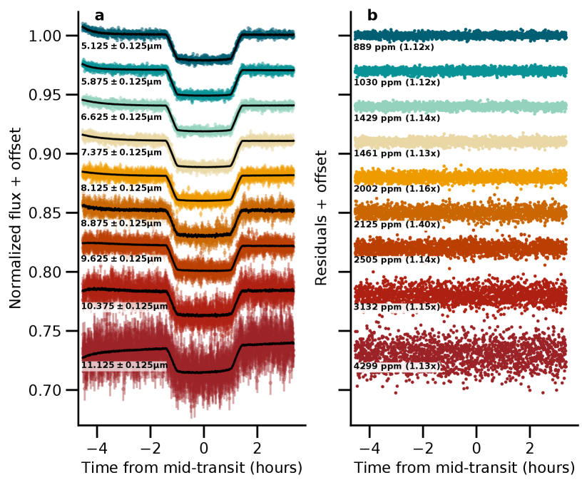
الشكل 1 عينة من منحنيات الضوء الطيفي والمخلفات لعبور WASP-39b تمت ملاحظتها باستخدام MIRI/LRS. أ: تم تركيب نموذج عبور كوكب خارجي مضروبًا في نموذج نظامي (خط أسود متصل) على كل منحنى ضوئي. ب: يتم عرض البقايا للنماذج الأكثر ملائمة لكل منحنى ضوئي. نقوم بالإبلاغ عن تبعثر في كل منحنى ضوئي باعتباره الانحراف المعياري للمخلفات خارج العبور، مع النسبة إلى ضوضاء الفوتون المتوقعة بين قوسين. الاختزال من Eureka!.
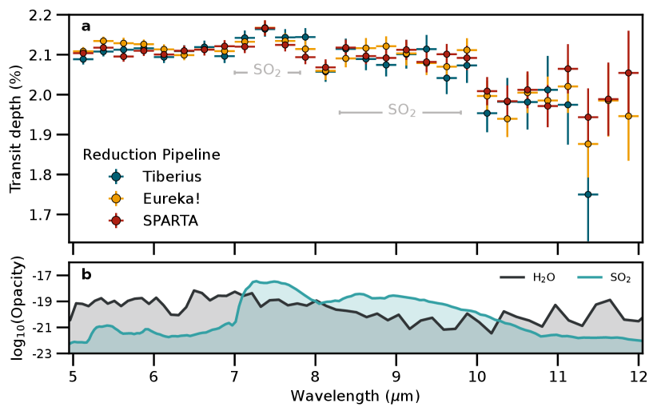
الشكل أطياف النفاذ 2 MIRI/LRS WASP-39b مشتقة باستخدام ثلاثة مسارات اختزال مستقلة. أ: تهيمن على الطيف ميزات امتصاص واسعة من SO2 عند 7.7 و 8.5 m وH2O عبر تغطية الطول الموجي بالكامل لـ MIRI/LRS. نحن نحدد أوجه عدم اليقين لدينا على أنها . ب: نقدم لوغاريتم عتامة الأنواع السائدة في الطيف بوحدات cm2 mol-1. تم اعتماد العتامات من PLATON باستخدام قوائم خط ExoMol (Polyansky et al., 2018; Underwood et al., 2016) وتتحمل خصائص الضغط الجوي، mbar ودرجة الحرارة، K.
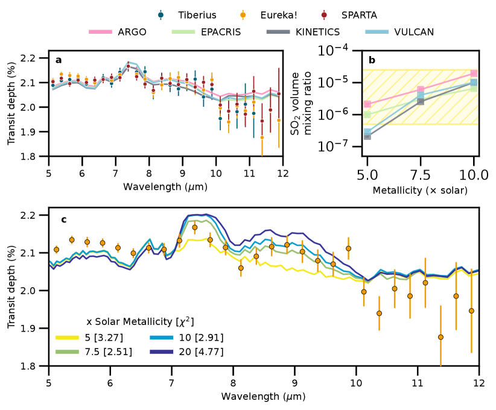
الشكل 3 استرجاع حر لطيف النفاذ MIRI/LRS WASP-39b. أ: تتم مقارنة الطيف من اختزال Eureka! (مع أوجه عدم اليقين 1) مع أفضل الأطياف المستردة والمناطق المظللة 1 المرتبطة بها من ستة رموز استرجاع حرة. ب: توزيعات الاحتمالية الخلفية المقابلة لنسبة خلط الحجم (VMR) وما يرتبط بها من أوجه عدم اليقين 1 (النقاط) لوفرة \ceSO2. يتراوح اللوغاريتم المقتبس (\ceSO2) من أدنى حد إلى أعلى حدود 1 لجميع الأجزاء الستة الخلفية. لقد اخترنا اختزال Eureka! نظرًا لخطوات الاختزال المشابهة لملاحظات WASP-39 b السابقة (Ahrer et al., 2023; Alderson et al., 2023; Feinstein et al., 2023; Rustamkulov et al., 2023) وحقيقة أنه يوفر تغطية الطول الموجي الكامل للملاحظات. تعطي النتائج من الاختزالين الآخرين لـ SO2 نتائج متسقة على نطاق واسع وتتم مناقشتها بشكل أكبر في الطرق.
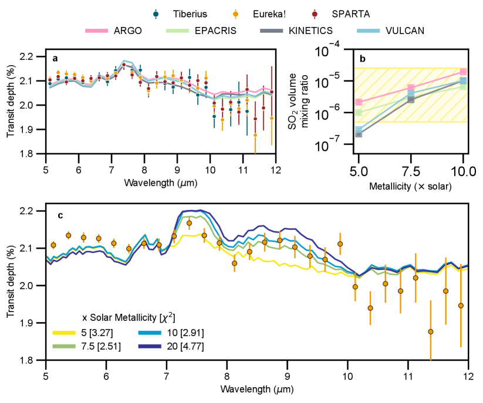
الشكل 4 مقارنة أربعة نماذج كيميائية ضوئية مستقلة مع أطياف النفاذ MIRI/LRS المرصودة لـ WASP-39b. أ: مقارنة أطياف النفاذ النظرية لمتوسط الأطراف في الصباح والمساء مع الملاحظات بافتراض أفضل معادن الغلاف الجوي لـ 7.5 الشمسية. ب: \ceSO2 متوسط الأطراف VMR بين 10 و 0.01 mbar كدالة معدنية للنماذج الكيميائية الضوئية الأربعة. تمثل المنطقة الصفراء المظللة والمظللة قيد 1 \ceSO2 من عمليات الاسترجاع الحرة على اختزال Eureka! (الشكل 3). ج: اعتماد طيف النفاذ المصمم على نموذج VULCAN على معدنية الغلاف الجوي، مقارنةً باختزال Eureka!. يفضل الاختزال Tiberius معدنية الشمسية، بينما يفضل الاختزال SPARTA الشمسية (انظر البيانات الموسعة). تشير نماذج VULCAN إلى أنه لا يوجد سوى اختلاف بسيط () متوقع لميزة \ceSO2 عند m عند افتراض معادن جوية أعلى، في حين أن ميزة \ceSO2 عند m أكثر حساسية للتغييرات الطفيفة. تتناسب ميزة \ceSO2 الموجودة في m بشكل جيد مع نماذج الشمسية المعدنية .
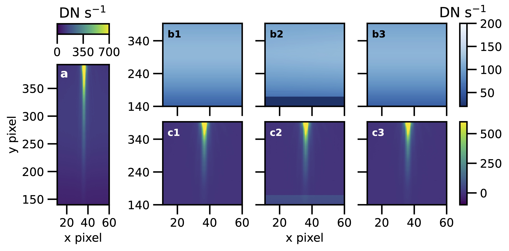
شكل البيانات الموسعة. 1 مقارنة بين نماذج الخلفية المختلفة والطرح لكل مسار. (أ) صورة متوسطة خارج العبور لكاشف MIRI/LRS من مرحلة خط الأنابيب jwst معالجة 2. (ب) نماذج الخلفية من Eureka! (1)، Tiberius (2)، وSPARTA (3). (ج) الخلفية المطروحة لمخرجات المرحلة 2 من كل مسار. من المتوقع أن تتغير الخلفية بسلاسة لـ MIRI/LRS. لا توجد ميزات منفصلة أو تغييرات حادة في الخلفية عند وحدات البكسل y ، المقابلة لـ m، والتي تمت رؤيتها في الملاحظات الأخرى (Bell et al., 2023). يتم تقديم جميع الصور بأعداد البيانات في الثانية (DN s-1). لم يستخرج اختزال Tiberius أطيافًا ممتدة نحو الأحمر مثل Eureka! وSPARTA، وهذا هو سبب ظهور الشريط الأفقي في اللوحتين b2 وc2.
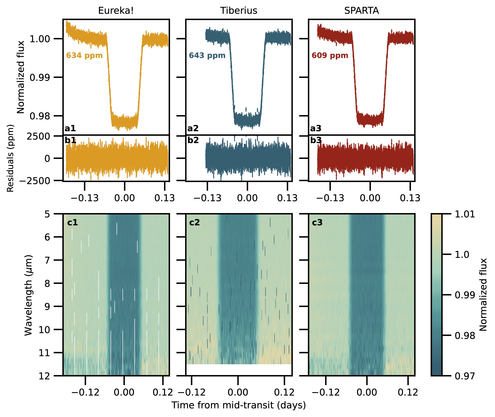
شكل البيانات الموسعة. 2 MIRI/LRS منحنيات الضوء الأبيض والطيف الضوئي من مسارات الاختزال المستقلة الثلاثة المستخدمة في هذا العمل. (أ) نقتبس الأجزاء المبعثرة لكل مليون خارج العبور في كل منحنى ضوئي في الشكل نحدد وقت الخروج من العبور على أنه و ؛ تم اختيار هذه الأوقات لأنها تتجاهل المنحدر الأسي في بداية الملاحظات ولا تتضمن أي بيانات في الدخول/الخروج العابر. ( ب ) بقايا البيانات وأخطاءها مقارنة بنموذج العبور الأفضل. الأخطاء المقتبسة هي . (ج) يتم تطبيع منحنيات الضوء الطيفي بواسطة التدفق خارج العبور أثناء الملاحظات. تُظهر جميع الاختزالات تشتتًا ثابتًا خارج النقل في جميع صناديق الطول الموجي ( m). المسافات البيضاء في c1 هي حيث تكون القيم في منحنى الضوء NaN.
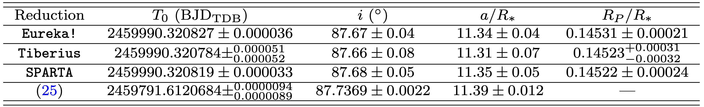
جدول البيانات الموسعة 1 تتوافق معلمات النظام الناتجة عن منحنى الضوء الأبيض.
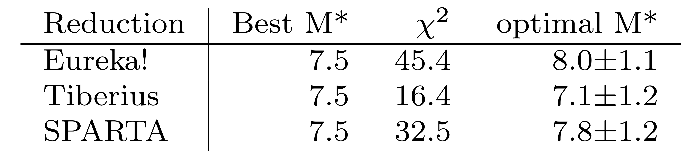
جدول البيانات الموسعة 2 النتائج من شبكة IDIC التي تفترض أن C وO وS لها نفس تعزيز الوفرة بالنسبة إلى الشمسية (أي M*).
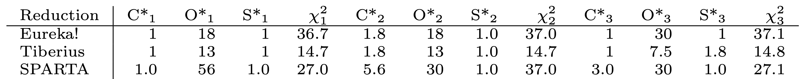
جدول البيانات الموسعة 3 النتائج من شبكة IDIC التي تفترض أن C وO وS يمكن أن تأخذ كميات مختلفة من الشمسية (C*، O*، S*). يتم عرض لأطياف النماذج الثلاثة الأفضل ملاءمة لكل من الاختزالات الثلاثة.
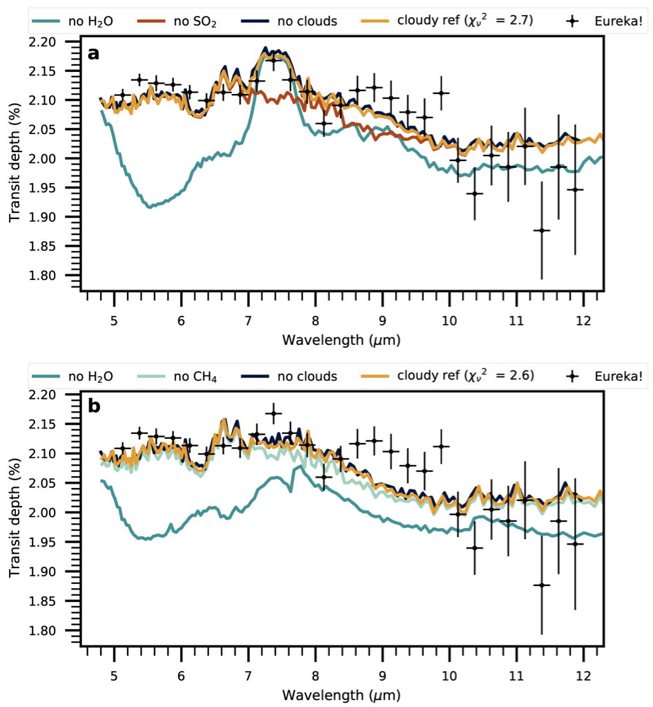
شكل البيانات الموسعة. 3 يتم عرض نماذج الشبكة الغائمة PICASO (الخطوط الذهبية) مع SO2 (أ) وبدون SO2 (ب) مقارنة بـ بيانات JWST MIRI/LRS (النقاط السوداء) من اختزال Eureka!. تظهر أيضًا أفضل التطابقات مع إزالة \ceH2O (أزرق مخضر داكن)، و\ceSO2 (أحمر)، و\ceCH4 (أزرق مخضر فاتح)، والسحب (أزرق داكن) من النموذج، توضيح أي الممتصات تهيمن على عتامة النموذج الأفضل. عندما لا يتم تضمين SO2 في النموذج، فإن \ceCH4 الزائد يعوض امتصاصه في الاختزال Eureka! كما هو موضح في اللوحة السفلية.
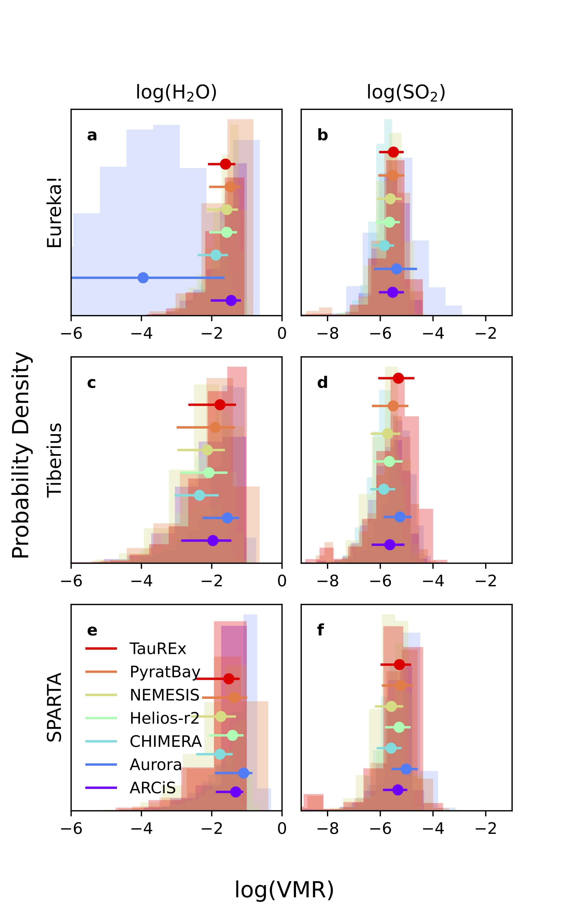
شكل البيانات الموسعة. 4 اللوغاريتم المسترد لنسبة خلط الحجم \ceSO2 و\ceH2O (VMR) من جميع رموز الاسترجاع الستة وثلاثة اختزالات للبيانات. يتم إعطاء القيم المتوسطة وحالات عدم اليقين 1 في النقاط الملونة.
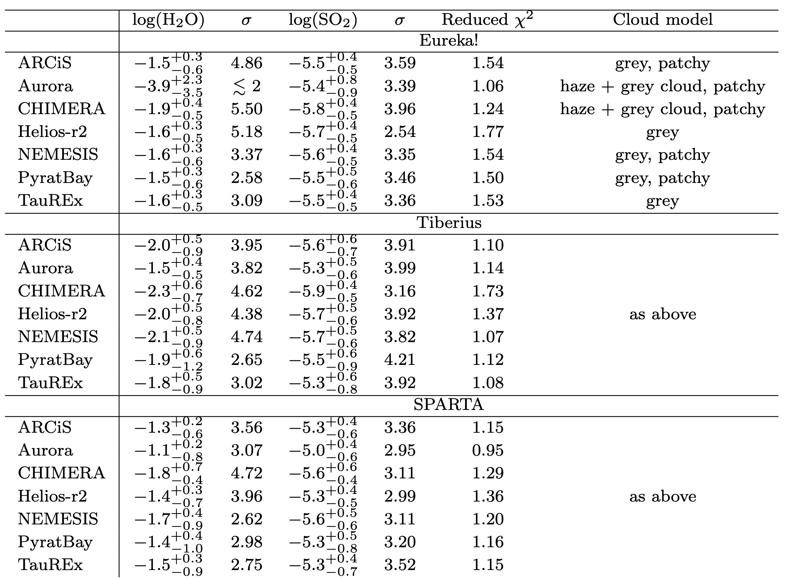
جدول البيانات الموسعة 4 يجمع هذا الجدول جميع نتائج الاسترداد الحرة لنسب خلط الحجم \ceH2O و\ceSO2، بالإضافة إلى أهمية الكشف الخاصة بها، ومدى الملاءمة لكل عملية استرجاع فردية. تمت الإشارة أيضًا إلى النموذج السحابي المستخدم لكل رمز استرجاع. بالنسبة للجزء الأكبر، تكون الوفرة متسقة بين رموز الاسترجاع لاختزال معين، على الرغم من وجود بعض الاختلاف بين الاختزالات.
الطرق
اختزال البيانات
قمنا بتطبيق ثلاثة إجراءات مستقلة لاختزال البيانات وتركيب منحنى الضوء على ملاحظات MIRI/LRS. أدناه، نوضح خطوات الاختزال الرئيسية التي اتخذها كل مسار، متبوعة بمنهجيات تركيب منحنى الضوء الخاصة بهم. بالإضافة إلى ذلك، نناقش الاختلافات في مسارات اختزال البيانات التي أدت إلى اختلاف أشكال ميزة الامتصاص \ceH2O عند m.
Eureka!
في البداية، قامت تسعة فرق مستقلة باختزال هذه البيانات باستخدام المصدر المفتوح Eureka!\citeAppbell2022 مسار. من هذه التحليلات، اخترنا في النهاية تحليلًا واحدًا لتسليط الضوء عليه في هذه الورقة استنادًا إلى مقارنات بين الضوضاء البيضاء والحمراء للبقايا بعد التركيب. لدينا الثقة Eureka! يتبع الاختزال عن كثب الأساليب التي تم تطويرها من أجل الكواكب الخارجية العابرة ERS الفريق MIRI/LRS ملاحظات منحنى المرحلة WASP-43 ب والموصوفة في المرجع\citeAppbell2023_arxiv, bell2023_Nature. كما تم إجراء دراسات المعلمة واسعة النطاق على Eureka! المرحلة 1–3 المعلمات باستخدام WASP-43b، يتم إعادة استخدام أفضل إعدادات المعلمات التي تم تحديدها من هذا العمل هنا ويتم تلخيصها بإيجاز أدناه. الآخر Eureka! استخدمت التحليلات معلمات اختزال مختلفة وكانت متسقة بشكل عام مع اعتمادنا ولكنها أكثر ضجيجًا Eureka! التحليلات. الكامل Eureka! ملفات التحكم و Eureka! تتوفر ملفات ملفات المعلمات المستخدمة في هذه التحليلات كجزء من منتجات البيانات المرتبطة بهذا العمل (https://doi.org/10.5281/zenodo.10055845).
لقد استخدمنا الإصدار 0.9 التابع Eureka!\citeAppbell2022 مسار, CRDS إصدار 11.16.16 والسياق 1045 ، و jwst إصدار الحزمة 1.8.3 \citeAppjwst_v1.8.2. كما هو موضح في المرجع \citeAppbell2023_arxiv, bell2023_Nature، نحن نفترض ربحًا ثابتًا لـ 3.1 الإلكترونات /DN (نفس الشيء بالنسبة ل SPARTA اختزال؛ انظر أدناه)، وهو أقرب إلى الربح الحقيقي من قيمة 5.5 المفترض حاليا في CRDS الملفات المرجعية (اتصال خاص، سارة كيندرو). Eureka! المرحلة 1 تمت زيادة عتبة رفض خطوة القفز إلى 7.0 والمرحلة 2 تم تخطي خطوة الصورة (لتقدير ضوضاء الفوتون المتوقعة بسهولة أكبر)، ولكن بخلاف ذلك تم تخطي المرحلة 1–2 تمت المعالجة بعد jwst الإعدادات الافتراضية لخط الأنابيب. قمنا أيضًا بتقييم استخدام ملف مرجعي تجريبي غير خطي تم تطويره لمعالجة هذا الأمر تأثير MIRI أكثر إشراقا وأكثر بدانة”\citeAppargyriou_2023، لكننا قررنا في النهاية الالتزام بالملف المرجعي غير الخطي الافتراضي حيث تغير أطياف النفاذ النهائي بأقل من في جميع الأطوال الموجية.
لقد استخرجنا الأعمدة 11–61 والصفوف 140–393 نظرًا لأن وحدات البكسل خارج هذا النطاق تهيمن عليها الضوضاء بشكل مفرط. قمنا بإخفاء وحدات البكسل التي تم وضع علامة عليها “DO_NOT_USE” في مصفوفة DQ لإزالة وحدات البكسل السيئة المحددة بواسطة خط الأنابيب jwst. للمساعدة في إلغاء ربط الضوضاء المنهجية، نقوم بحساب عرض مركزي واحد وعرض PSF لكل تكامل من خلال الجمع على طول اتجاه التشتت وتركيب 1D غاوسي؛ تم استخدام المركز للتكامل الأول فقط لتحديد مواقع الفتحة. لقد طرحنا تدفق الخلفية عن طريق طرح متوسط وحدات البكسل المنفصلة عن المصدر بواسطة 11 أو أكثر من وحدات البكسل بعد أول القيم المتطرفة لقص سيجما على طول المحور الزمني وعلى طول المحور المكاني. أجرينا بعد ذلك الاستخراج الطيفي الأمثل \citeApphorne1986optspec باستخدام وحدات البكسل الموجودة داخل بكسلات 5 من المركز. كان ملفنا المكاني عبارة عن إطار متوسط تم تنظيفه، باتباع نفس طرق قص سيجما الموضحة في المرجع \citeAppbell2023_arxiv, bell2023_Nature. قمنا بعد ذلك بجمع البيانات طيفيًا في صناديق 28 ، بعرض كل منها 0.25 m، ويمتد على 5–12 m بالإضافة إلى منحنى ضوء أبيض واحد يمتد على كامل 5–12 m. لإزالة أي أشعة كونية متبقية أو تأثيرات أي تحركات هوائي عالية الكسب، قمنا بعد ذلك بقص كل منحنى ضوئي باستخدام سيجما، وإزالة أي نقاط 4 أو أكثر من سيجما متعارضة مع نسخة سلسة من منحنى الضوء محسوبة باستخدام مرشح صندوق السيارة بعرض تكاملات 20. يؤدي هذا إلى إزالة النقاط الخاطئة مع ضمان عدم قطع مدخل أو خروج العبور.
عند التركيب، يتكون نموذجنا الفيزيائي الفلكي من نموذج عبور starry \citeAppstarry مع سوابق غير معلوماتية حول نسبة نصف قطر الكوكب إلى النجم ومعلمات تعتيم الأطراف التربيعية غير المقيدة والمُعاد ضبطها \citeAppKipping2013. استخدمنا أيضًا مقدمات عامة حول المعلمات المدارية للكوكب للتحقق من أن هذه البيانات الجديدة متوافقة مع الحل المداري المقدم في المرجع \citeAppdatasynthesis2023. على وجه التحديد، استخدمنا مقدمات غاوسية لوقت العبور، والميل، والمحور شبه الرئيسي المقياس بناءً على قيم المرجع \citeAppdatasynthesis2023 التي تم اشتقاقها من خلال تركيب جميع مجموعات بيانات الرصد WASP-39b السابقة مرة واحدة، راجع القيم في جدول البيانات الموسعة 1 ، ولكن مع وجود شكوك متضخمة إلى حد كبير (تقريبًا 10 أو أعلى من الدقة التي يمكن تحقيقها باستخدام بيانات MIRI هذه وحدها) للسماح لهذه البيانات بالتحقق بشكل مستقل من القيم المنشورة مسبقًا \citeAppdatasynthesis2023. لقد افترضنا أيضًا عدم الانحراف المركزي وثبتنا الفترة المدارية بقيمة 4.0552842 من الأيام من المرجع \citeAppdatasynthesis2023. لقد قمنا بفصل الارتباط خطيًا مقابل الموضع المكاني المتغير وعرض PSF المحسوب خلال المرحلة 3. لقد سمحنا أيضًا باتجاه خطي في الوقت المناسب بالإضافة إلى منحدر أسي واحد مقيد بشكل ضعيف لإزالة المنحدر المعروف في بداية ملاحظات MIRI/LRS \citeAppbouwman2023, bell2023_arxiv, bell2023_Nature. لقد قمنا أيضًا بقص عمليات التكامل الأولى لـ 10 حيث عانت من منحدر أسي قوي بشكل خاص. لم يكن هناك أي دليل على إمالة المرآة \citeAppschlawin2023 في الملاحظات ولا أي تأثيرات متبقية من تحركات الهوائي عالية الكسب بعد قص سيجما للبيانات في المرحلة 4. وأخيرًا، استخدمنا أيضًا مضاعف الضوضاء لالتقاط أي ضوضاء بيضاء زائدة وضمان انخفاض مربع كاي إلى 1. استخدمنا بعد ذلك PyMC3 No U-Turns Sampler \citeApppymc3 لأخذ عينات من الجزء الخلفي لدينا. استخدمنا سلسلتين مستقلتين واستخدمنا إحصائية Gelman-Rubin \citeAppGelmanRubin1992 للتأكد من تقارب سلاسلنا ()، ثم قمنا بدمج العينات من السلسلتين وحسبنا النسب المئوية 16th و 50th و 84th من 1D الخلفية الهامشية لتقدير القيمة الأفضل وعدم اليقين لكل معلمة.
نظرًا لأن المعلمات المدارية المحددة لدينا كانت متوافقة مع تلك التي حددها المرجع \citeAppdatasynthesis2023، فقد قمنا بعد ذلك بتثبيت المعلمات المدارية لدينا على تلك الخاصة بالمرجع\citeAppdatasynthesis2023 لتركيباتنا الطيفية التي تضمن الاتساق مع أطياف JWST الأخرى لهذا الكوكب. تم إعطاء معلمات سواد الأطراف لتركيباتنا الطيفية غاوسيًا قبل 0.1 فيما يتعلق بأطياف معامل سواد الأطراف المتوقعة بالنموذج \citeAppMorello2020_aj, Morello2020_joss استنادًا إلى شبكة Stagger \citeAppChiavassa2018. قمنا أيضًا بتقييم عمليات تكامل 120 الأولى بشكل أكثر تحفظًا (بدلاً من 10) لنوباتنا الطيفية، لكننا وجدنا أن الأطياف الناتجة قد تغيرت بنسبة أقل بكثير من في جميع الأطوال الموجية.
بالنسبة لمنحنى الضوء الأبيض الخاص بنا، وجدنا مستوى ضوضاء بيضاء 26% أكبر من حد الفوتون المقدر، بينما كانت القنوات الطيفية عادةً 10–20% أكبر من حد الفوتون المقدر. نظرًا لأن الكسب المعتمد لدينا لـ 3.1 دقيق فقط ضمن 10% من الكسب الحقيقي (الذي يختلف كدالة للطول الموجي؛ الاتصال الخاص، سارة كيندرو؛ \citeAppbell2023_arxiv, bell2023_Nature)، فإن هذه المقارنات مع حدود الفوتون المقدرة تعطي فقط أفكارًا عامة عن أداء MIRI. أظهر فحص مخططات التباين Allan \citeAppAllan1966 الطرف الأدنى من الضوضاء الحمراء في المخلفات لدينا. أظهر ارتباطنا بالموقع المكاني وعرض PSF أن الأطوال الموجية الأقصر تأثرت بشدة بالتغيرات في الموضع المكاني وعرض PSF، مع ضوضاء القيادة عند مستوى 100 ppm في أقصر صندوق طول موجي؛ وفي الوقت نفسه، كان التأثير عند الأطوال الموجية الأطول أضعف ولم يكن مقيدًا بشكل جيد. تم تلخيص المعلمات المدارية المحددة من منحنى الضوء الأبيض في جدول البيانات الموسعة 1.
Tiberius
Tiberius هو مسار لإجراء الاستخراج الطيفي وتركيب منحنى الضوء، وهو مشتق من خط الأنابيب LRG-BEASTS \citeAppKirk2017, 2019AJ….158..144K, 2021AJ….162…34K. وقد تم استخدامه في تحليل بيانات JWST من برنامج ERS Transiting Exoplanet Community وبرامج GO \citeAppjwst2022,Alderson2023,rustamkulov2023,Lustig-Yaeger2023.
في الاختزال الذي قمنا به باستخدام Tiberius، قمنا أولاً بتشغيل مسار STScI’s jwst على ملفات uncal.fits. قمنا بتنفيذ الخطوات التالية في خط الأنابيب jwst: group_scale، dq_init، saturation، reset، linearity، dark_current، refpix، ramp_fit، gain_scale، assign_wcs و extract_2d. تم تشغيل الاستخراج الطيفي الخاص بنا على ملفات gainscalestep.fits واستخدمنا ملفات extract2d.fits لمعايرة الطول الموجي. كما هو موضح في وثائق jwst، فإن خطوة gain_scale تكون في الواقع سليمة إذا تم استخدام إعداد الكسب الافتراضي. ولهذا السبب، استخدمت وحدات الاختزال Tiberius DN/s. في النهاية، نظرًا لأننا نقوم بتطبيع منحنيات الضوء لدينا وإعادة قياس الشكوك الضوئية أثناء تركيب منحنى الضوء، فإن وحدات التدفق النجمي المستخرج لا تؤثر على طيف النفاذ.
لم نقم بتنفيذ الخطوات jump أو flat_field. بدلاً من خطوة القفز، أجرينا اكتشافًا خارجيًا لكل بكسل في السلسلة الزمنية من خلال تحديد موقع عمليات التكامل التي انحرف فيها البكسل بواسطة عن القيمة المتوسطة لذلك البكسل. تم استبدال أي وحدات بكسل بعيدة في السلسلة الزمنية بالقيمة المتوسطة لذلك البكسل. بعد ذلك أجرينا الاستخراج الطيفي. قمنا أولاً باستيفاء البعد المكاني للبيانات على شبكة جديدة بدقة ، مما يحسن استخراج التدفق على مستوى البكسل الفرعي. تم بعد ذلك تتبع الأطياف باستخدام دوال غاوسية المجهزة لكل صف بكسل من الصف 171 إلى 394. تم بعد ذلك تزويد متوسطات هذه الدوال الغاوسية بمتعددة الحدود من الدرجة الرابعة. أجرينا بعد ذلك قياسًا ضوئيًا قياسيًا للفتحة في كل صف بكسل بعد طرح متعدد الحدود الخطي المثبت عبر منطقتين في الخلفية على جانبي التتبع الطيفي. لقد جربنا اختيار عرض الفتحة وعرض الخلفية لاختزال الضوضاء في منحنى الضوء الأبيض. وكانت النتيجة فتحة بعرض 8 بكسل ومنطقتين خلفية بعرض 10 يقابلهما بكسل 8 من فتحة الاستخراج.
بعد ذلك قمنا بربط الطيف النجمي لكل تكامل مع طيف مرجعي لقياس الانجرافات في اتجاه التشتت. تم اعتبار الطيف المرجعي هو تكامل 301st للسلسلة الزمنية، حيث قمنا بقص أول تكاملات 300 (دقائق 80) لإزالة المنحدر الذي يظهر في منحنى ضوء العبور. كان للتحولات المقاسة RMS من بكسلات 0.002 في اتجاه التشتت و 0.036 في الاتجاه المكاني (كما تم قياسه من خطوة التتبع). بعد ذلك، قمنا بدمج أطيافنا في صناديق بعرض 0.25 m من 5–11.25 m لعمل منحنيات الضوء الطيفية الخاصة بنا.
لقد زودنا منحنياتنا الضوئية بمنحنى ضوء عبور تحليلي، تم تنفيذه في batman \citeAppbatman، مضروبًا في اتجاه زمني. بالنسبة لمنحنى الضوء الأبيض، كان الاتجاه هذه المرة متعدد الحدود من الدرجة الثانية، حيث لم يكن الاتجاه الخطي كافيًا. ويختلف هذا عن الاختزالات الأخرى التي تعاملت مع النظاميات باعتبارها منحدرات أسية ذات اتجاه خطي. بالنسبة لمنحنيات الضوء الطيفية، قمنا بتقسيم كل منحنى ضوء طيفي على أفضل نموذج عبور ونظامي مناسب من منحنى الضوء الأبيض المناسب. لم يكن الاتجاه التربيعي ضروريًا لمنحنيات الضوء الطيفية، والتي نلائمها بدلاً من ذلك مع الاتجاه الخطي لمراعاة الاتجاهات اللونية المتبقية التي لا يتم حسابها بواسطة تصحيح الوضع الشائع.
في جميع تناسبات منحنى الضوء، استخدمنا Markov Chain Monte Carlo (MCMC) المطبق عبر emcee \citeAppemcee2013. لقد قمنا بتعيين عدد المشاة يساوي عدد المعلمات الحرة وقمنا بتشغيل مجموعتين من السلاسل. تم استخدام المجموعة الأولى من السلاسل لإعادة قياس حالات عدم اليقين الضوئية لإعطاء وتم تشغيل المجموعة الثانية من السلاسل مع حالات عدم اليقين المعاد قياسها. في كلتا الحالتين، تم تشغيل السلاسل حتى كانت على الأقل طول الارتباط التلقائي لكل معلمة. أدى ذلك إلى سلاسل طويلة بين خطوات 4000–10000.
نظرًا للمنحدر غير الخطي في بداية الملاحظات، قمنا بقص أول عمليات تكامل 300. لقد وجدنا أن هذا القطع أدى إلى طيف نفاذ ثابت وأكثر دقة. في الاختبارات دون قص أي تكامل، وجدنا أن هناك حاجة إلى كثيرة الحدود من الدرجة الخامسة لتناسب المنحدر. لقد رفضنا هذا بسبب المعلمات الحرة الإضافية. بالنسبة لمنحنى الضوء الأبيض، كانت المعلمات المجهزة لدينا هي وقت العبور المتوسط ()، والميل المداري للكوكب ()، والمحور شبه الرئيسي المقاس بنصف قطر النجم ()، ونسبة نصف قطر الكوكب إلى النجم ()، والمعلمات الثلاثة التي تحدد الاتجاه التربيعي متعدد الحدود في الوقت المناسب، ومعاملات سواد الأطراف التربيعية تمت إعادة قياسها بعد \citeAppKipping2013 ( و ). بالنسبة إلى و ، استخدمنا مقدمات غاوسية مع وسائل تم تحديدها بواسطة الحسابات من نماذج الغلاف الجوي النجمية Stagger 3D \citeAppChiavassa2018,Morello2020_aj, Morello2020_joss والانحرافات المعيارية لـ 0.1. تم تحديد الفترة على 4.0552842518 d كما هو موجود من الملاءمة العالمية لمجموعات البيانات JWST القريبة من IR \citeAppdatasynthesis2023. يتم عرض أفضل القيم الملائمة لمعلمات النظام في الجدول 1.
بالنسبة لمنحنياتنا الضوئية الطيفية، قمنا بإصلاح معلمات النظام ( ، ، ) على القيم من الملاءمة العالمية إلى مجموعات بيانات JWST القريبة من IR \citeAppdatasynthesis2023. كان متوسط RMS للبقايا من الضوء الأبيض وتركيبات منحنى الضوء الطيفي هو 573 و 3034 ppm، على التوالي.
SPARTA
إن الأداة البسيطة لاختزال الغلاف الجوي الكوكبي لأي شخص (SPARTA) عبارة عن كود مفتوح المصدر يهدف إلى أن يكون بسيطًا وسريعًا ومجردًا ونفعيًا. SPARTA مستقل تمامًا ولا يستخدم أي تعليمات برمجية من خط الأنابيب JWST أو أي مسار آخر. تمت كتابته في البداية لاختزال منحنى الطور MIRI لـ GJ 1214b، وتم وصفه بالتفصيل في تلك الورقة \citeAppkempton_2023. تم استخدام SPARTA أيضًا لاختزال منحنى الطور MIRI لـ WASP-43b، والذي تم أخذه كجزء من برنامج الإصدار المبكر للعلوم \citeAppbell2023_arxiv, bell2023_Nature. بعد أن تعلمنا العديد من أفضل الممارسات من هذه الاختزالات السابقة، لم نقم فعليًا بإجراء أي تحسين للمعلمات لاختزال WASP-39b الحالي. وفيما يلي نلخص بإيجاز خطوات الاختزال، ولكننا نحيل القارئ إلى الورقتين السابقتين لمزيد من التفاصيل.
في المرحلة 1 ، يبدأ SPARTA بالملفات غير المعايرة ويقوم بإجراء تصحيح اللاخطية، والطرح الداكن، والتركيب العلوي، والتصحيح المسطح، بهذا الترتيب. يتجاهل الملاءمة الصاعدة مجموعات 5 الأولى والمجموعة الأخيرة، المعروفة بأنها شاذة، ويقدر الميل على النحو الأمثل باستخدام المجموعات المتبقية عن طريق أخذ الاختلافات بين القراءات المتجاورة وحساب المتوسط المرجح للاختلافات. يتم حساب الأوزان باستخدام صيغة رياضية تعطي التقدير الأمثل للميل \citeAppkempton_2023.
بعد المرحلة 1 ، تقوم SPARTA بحساب الخلفية عن طريق أخذ متوسط الأعمدة 10–24 و 47–61 (شاملة، مفهرسة صفريًا) لكل صف في كل تكامل. ثم يتم طرح الخلفية من البيانات. هاتان النافذتان متساويتان في الحجم وعلى مسافة متساوية من الأثر الموجود على كلا الجانبين، لذلك يتم حذف أي منحدر في الخلفية بشكل طبيعي.
بعد ذلك، نقوم بحساب موضع التتبع. نحن نحسب القالب عن طريق أخذ متوسط البكسل لجميع عمليات التكامل. لكل تكامل، نقوم بتغيير القالب (عبر الاستيفاء الثنائي) وقياس القالب (عن طريق الضرب بكمية قياسية) حتى يطابق التكامل. يتم تسجيل التحولات التي تؤدي إلى أدنى مستوى .
يتم استخدام القالب المذكور أعلاه، إلى جانب المواضع التي نجدها، للاستخراج الأمثل. نقوم بتقسيم القالب على مجموع كل صف (تقدير للطيف) للحصول على ملف تعريف، ونقل ملف التعريف في الاتجاه المكاني بالمبلغ الموجود في الخطوة السابقة. يتم بعد ذلك استخدام ملف التعريف المتحول للاستخراج الأمثل، باستخدام خوارزمية \citeApphorne1986optspec. نحن نطبق هذه الخوارزمية فقط على نافذة 11 بعرض بكسل (كامل العرض) متمركزة على التتبع، ونرفض بشكل متكرر القيم المتطرفة حتى التقارب.
بعد الاستخراج الأمثل، نقوم بجمع كل الأطياف والمواضع في ملف واحد. نحن نرفض القيم المتطرفة من خلال إنشاء منحنى الضوء الأبيض، وتوجيهه باستخدام مرشح متوسط، ورفض عمليات التكامل بعيدًا عن 0. في بعض الأحيان، تكون أطوال موجية معينة فقط سيئة، وليس التكامل بأكمله. نحن نتعامل مع هذه الأمور عن طريق تغيير اتجاه منحنى الضوء عند كل طول موجي، وتحديد القيم المتطرفة 4 ، واستبدالها بمتوسط جيرانها على محور الوقت.
وأخيرًا، قمنا بتناسب الضوء الأبيض ومنحنيات الضوء الطيفية باستخدام emcee. الصناديق الطيفية هي نفسها تمامًا كما في الاختزالات Eureka! وTiberius: 0.25 واسعة وتتراوح من 5.00–5.25 إلى 11.75–12.00 . نقوم بقص أول عمليات تكامل 112 (دقائق 30)، ونرفض القيم المتطرفة لـ . في الضوء الأبيض المناسب، تكون معلمات سواد الأطراف و مجانية وتعطى مقدمات موحدة واسعة النطاق. في الملاءمة الطيفية، يتم تثبيت معاملات ، و ، و ، و ، ومعاملات سواد الأطراف على القيم الإيمانية، ولكن عمق العبور والمعلمات النظامية مجانية. يتم تقديم النموذج النظامي بواسطة
| (1) |
حيث هو ثابت المعايرة، A و يحددان المنحدر الأسي، t هو الوقت منذ بداية الملاحظات (بعد التشذيب)، x وy هما موضع التتبع على الكاشف، m هو المنحدر (يحتمل أن يكون سببه التقلب النجمي و/أو الانجراف الآلي)، و هو متوسط الوقت. يتم إعطاء جميع المعلمات سوابق موحدة. يجب أن يكون بين 0 و 0.1 ، ولكن لا يتم فرض حدود صريحة على المعلمات الأخرى.
النمذجة المتقدمة
استخدمنا العديد من النماذج المباشرة التي تأخذ في الاعتبار الكيمياء الضوئية لاستنتاج خصائص الغلاف الجوي لـ WASP-39b من الملاحظات. تعتمد هذه النماذج على مبادئ الفيزياء والكيمياء المعروفة التي تساعدنا في فهم العمليات الجوية المهمة الجارية. بالإضافة إلى ذلك، نستخدم أيضًا أحد النماذج لإنشاء شبكة نموذجية أكثر شمولاً لتقييم المعادن في الغلاف الجوي ونسب العناصر لـ WASP-39b. تحسب هذه النماذج تكوين الغلاف الجوي من خلال المعالجة الواضحة للتفاعلات الكيميائية الحرارية والكيميائية الضوئية والانتقال في الغلاف الجوي، وبشكل عام تتم تهيئتها من وفرة التوازن بناءً على نسبة عنصرية معينة، والتي نقوم بقياسها بالنسبة إلى وفرة الشمسية \citeAppLodders2020. على الرغم من أن وفرة النجم المضيف للكوكب هي نقطة المقارنة الأكثر طبيعية \citeApp[مثلاً،][]pacetti:2022، فإن وفرة العناصر المتعددة المقاسة WASP-39 تقترب جدًا من \citeAppPolanski2022 الشمسية. تستخدم جميع النماذج الكيميائية الضوئية نفس الطيف النجمي الحادث كما هو موضح في المرجع \citeAppTsai2023. أخيرًا ، نفكر أيضًا في نموذج التوازن الكيميائي الحراري للحمل الحراري الإشعاعي الذي يتضمن وفرة وسحب \ceSO2 المحقونة لربط عملنا بالتفسيرات السابقة لأطياف JWST القريبة من الأشعة تحت الحمراء لـ WASP-39b \citeApprustamkulov2023,feinstein2023,ahrer2023,Alderson2023.
VULCAN
ال 1 نموذج D الحركية VULCAN يعالج الكيمياء الحرارية \citeApptsai17 والكيميائية الضوئية \citeAppTsai2021 ردود الفعل. VULCAN يحل معادلات الاستمرارية الأويلرية بما في ذلك المصادر/المصارف الكيميائية، والانتشار ونقل الالتصاق، والتكثيف. استخدمنا C–H–N–O–S شبكة (https://github.com/exoclime/VULCAN/blob/master/thermo/SNCHO_photo_network.txt) للأجواء المخفضة التي تحتوي على 89 الأنواع المحايدة C- وH- وO- وN- وS و 1028 مجموع التفاعلات الكيميائية الحرارية (أي، 514 أزواج للأمام والخلف) و 60 تفاعلات التحلل الضوئي. يتم تبسيط المتآصلات الكبريتية إلى نظام S، \ceS2, \ceS3, \ceS4، و \ceS8. يتم استخلاص بيانات حركية الكبريت من NIST و KIDA قواعد البيانات، وكذلك النمذجة \citeAppMoses1996,Zahnle2016 والحسابات البدائية المنشورة في الأدبيات \citeApp[مثلاً،][]Du2008. تعتمد على درجة الحرارة UV المقاطع العرضية \citeAppTsai2021 لا تستخدم في هذا العمل من أجل البساطة، ولكن الاختبارات الأولية تظهر أن استبعادها أدى إلى اختلافات طفيفة فقط (أقل من 50% التابع \ceSO2 VMR). بصرف النظر عن وفرة العناصر المتفاوتة، قمنا بتطبيق إعداد مماثل لـ VULCAN كما هو الحال في المرجع \citeAppTsai2023.
KINETICS
يتم استخدام نموذج النقل الكيميائي الضوئي الحراري KINETICS 1D \citeAppallen81,yung84,Moses11,Moses2013 لحل معادلات الاستمرارية الأويلرية المقترنة للإنتاج والخسارة والنقل الانتشاري الرأسي للأنواع الموجودة في الغلاف الجوي. تتطابق قائمة التفاعلات الكيميائية، وبنية الغلاف الجوي الخلفية، والمعلمات الكوكبية المفترضة مع تلك الموضحة في المرجع \citeAppTsai2023، إلا أننا هنا نستكشف المعادن الإضافية في الغلاف الجوي. باختصار، تحتوي شبكة C-H-N-O-S-Cl المستخدمة لنموذج WASP-39b KINETICS على أنواع محايدة 150 تتفاعل مع بعضها البعض من خلال التفاعلات الكلية 2350 ، مع عكس التفاعلات غير التحلل الضوئي من خلال المبدأ الديناميكي الحراري للانعكاس المجهري \citeAppvisscher11.
ARGO
استخدم رمز الحركية الكيميائية الحرارية والكيميائية الضوئية 1D، ARGO، في الأصل شبكة Stand2019 لكيمياء الهيدروجين والكربون والنيتروجين والأكسجين المحايدة \citeAppRimmer2016,Rimmer2019. يحل ARGO معادلة الاستمرارية 1D المقترنة بما في ذلك التفاعلات الكيميائية الحرارية والكيميائية الضوئية والنقل العمودي. تم توسيع شبكة Stand2019 بواسطة المرجع \citeAppRimmer2021 من خلال تحديث العديد من التفاعلات، ودمج شبكة الكبريت التي طورها المرجع \citeAppHobbs2021، وإكمالها بتفاعلات من المرجع \citeAppKrasnopolsky2007 و المرجع \citeAppZhang2012 لإنتاج شبكة Stand2020. تشتمل شبكة Stand2020 على تفاعلات عكسية 2901 وتفاعلات 537 غير قابلة للانعكاس، تتضمن أنواع 480 المكونة من H وC وN وO وS وCl وعناصر أخرى.
EPACRIS
EPACRIS (محاكي التفاعل الإشعاعي للكواكب الخارجية &) عبارة عن محاكي جوي أحادي البعد للأغراض العامة للكواكب الخارجية. يحتوي EPACRIS على جذر نموذج كيمياء الغلاف الجوي الذي طوره Renyu Hu وSara Seager في MIT \citeApphu2012,hu2013,hu2014، ومنذ ذلك الحين تمت إعادة برمجته وترقيته بشكل كبير \citeApp[][وكذلك Yang & Hu 2023، قيد الإعداد، مع التركيز أساسًا على التحقق من معاملات معدلات التفاعل]hu2019information, hu2021photochemistry. نحن نستخدم وحدة كيمياء الغلاف الجوي EPACRIS لحساب التركيب الكيميائي للحالة المستقرة للغلاف الجوي WASP-39 b الذي يتحكم فيه التوازن الكيميائي الحراري، والنقل العمودي، والعمليات الكيميائية الضوئية. تشتمل الشبكة الكيميائية المطبقة في هذه الدراسة على الأنواع الحاملة لـ 60 المحايدة C وH وO وS وتفاعلات 427 الإجمالية (أي أزواج التفاعل القابلة للانعكاس 380 وتفاعلات التفكك الضوئي 47). في هذا النموذج الكيميائي، تكون نسبة خلط الحجم \ceSO2 حساسة لتفاعلين هما (i) \ceH2S \ceHS + \ceH و (ii) \ceSO + \ceOH \ceHOSO). وصف موجز، إذا كان معامل معدل إعادة التركيب \ceHS + \ceH \ceH2S أسرع من cm3/جزيء/ثانية (حد الاصطدام حوالي ) cm3/جزيء/ثانية)، سيؤدي ذلك إلى تفكك \ceH2S غير فعال (أي يبدأ \ceH2S في الانفصال على ارتفاعات أعلى)، مما يؤدي إلى انخفاض تكوين \ceSO2. لسوء الحظ، على حد علمنا، لا يوجد معامل معدل تحلل \ceH2S محسوب نظريًا ولا يتم قياسه تجريبيًا. لهذا السبب، في EPACRIS، افترضنا أن \ceH2S \ceHS + \ceS يشبه \ceH2O \ceHO + \ceH. ومع ذلك، فإن جميع معاملات معدل إعادة التركيب \ceHS + \ceH \ceH2S المستخدمة في نماذج مختلفة كانت أبطأ من cm3/جزيء/ثانية وتحت هذا النطاق، نسبة خلط الحجم \ceSO2 ليست حساسة لهذا التفاعل بعد الآن. فيما يتعلق بتفاعل \ceSO + \ceOH \ceHOSO، يُفضل التفاعل الأمامي (التفاعل بدون حاجز) عند درجات حرارة منخفضة وضغط أعلى وفقًا لأسطح الطاقة المحتملة HOSO \citeAppHughes2002. لهذا السبب، يظهر استبعاد هذا التفاعل من النموذج الكيميائي EPACRIS ما يصل إلى 2 مراتب مقدار من الزيادة (أي من [\ceSO2] إلى ) في نسبة خلط الحجم \ceSO2 في الطرف الصباحي. ومع ذلك، في الطرف المسائي الذي تصل درجة حرارته إلى 200 K أعلى مقارنة بالطرف الصباحي، يمكن الآن أن ينفصل HOSO بشكل أكبر ليشكل \ceSO2 وH بسبب ارتفاع درجة الحرارة، مما يؤدي إلى زيادة [\ceSO2] مقارنة بالطرف الصباحي [\ceSO2] .
IDIC الشبكة
قدم المرجع \citeAppcrossfield:2023 شبكة من نماذج الكيمياء الضوئية VULCAN (نطلق عليها شبكة IDIC) لـ WASP-39b التي تغطي حجم 3D من عناصر C وO وS المحتملة وفرة دون الهباء الجوي. استخدمنا هذه النماذج للمقارنة مع الاختزالات الطيفية الثلاثة لدينا. نحن نلائم كل طيف نفاذ MIRI/LRS عن طريق ربط جميع أطياف الطراز بالدقة العادية 0.25 m للأطياف المرصودة، مما يسمح بإزاحة رأسية تعسفية لكل طيف نموذجي، وحساب لكل طيف نموذجي. لقد حددنا أولاً مدى جودة الملاءمة مع الاحتفاظ بجميع الوفرة المرتبطة بنفس القيمة (أي C وO وS جميعها معززة بنفس المستوى بالنسبة للوفرة الشمسية). نحن نلائم القطع المكافئ مع أدنى ثلاث نقاط لتقدير التعزيز الأمثل لوفرة العناصر وعدم اليقين \citeApp[أي حيث ؛][]avni:1976. قمنا بعد ذلك أيضًا بمقارنة قيم ذات الوفرة المرتبطة بتلك المشتقة عبر شبكة 3D بأكملها من خلال السماح باختلاف وفرة العناصر الثلاثة بشكل فردي. تُظهر جداول البيانات الموسعة 2 و 3 الوفرة وقيم لهذه التحليلات.
يعد تفسير الأطياف أمرًا صعبًا نظرًا لأن جودة الملاءمة تختلف بشكل كبير عبر الأطياف المرصودة: عبر جميع نماذج IDIC، نجد الأكثر ملائمة لـ 14.7 لاختزال Tiberius ولكن الأكثر ملائمة لاختزال Eureka! (الذي يُبلغ عن شكوك في القياس أصغر بكثير). ومع ذلك، تشير جميع التحليلات المرتبطة إلى وجود معادن كبيرة لـ 7.1–8.0 الشمسية. الانحراف المعياري لقيم المعدن المثالية هو 0.4 ، وهو أصغر من متوسط حالات عدم اليقين في جدول البيانات الموسعة 2 ، مما يشير إلى أن عدم اليقين في المعدن السائب تهيمن عليه الشكوك الإحصائية (أو المنهجية المعتمدة على النموذج) بدلاً من الاختلافات بين العديد من الأطياف المخفضة.
عند السماح بوفرة C وO وS لكل منها تختلف بحرية، في جميع الحالات تُظهر النماذج الأفضل ملاءمة تفضيلًا لنسب O/S الشمسية فوق الشمسية، ونسب C/O الشمسية الفرعية، ونسب C/S الشمسية تقريبًا. يشير المرجع \citeAppcrossfield:2023 إلى أنه يمكن استخدام هذه النسب لتقييد تاريخ تكوين الكوكب من خلال المقارنة بنماذج التكوين \citeApppacetti:2022,schneider:2021b. ومع ذلك، يُظهر تحليل Bayesian Information Criterion (BIC) أنه بالنسبة لاختزالات Tiberius وSPARTA، فإن الأطياف المرصودة لا تبرر المعلمات الحرة الإضافية لوفرة العناصر المستقلة المتعددة. يبدو أن قيمة BIC الرسمية لاختزال Eureka! تشير إلى أن الوفرة المستقلة لها ما يبررها، ولكن هذا الاستنتاج يبدو مشكوكًا فيه نظرًا لأن هذا الطيف يعطي أسوأ قيم (36.7 مع نقاط بيانات 28 فقط).
PICASO الشبكة
الملاحظات السابقة ل WASP-39 ب مع JWST NIRspec PRISM, NIRISS SOSS, NIRCam F322 دبليو، و NIRSpec G395 ح \citeAppjtec2023,ahrer2023,Alderson2023,feinstein2023,rustamkulov2023 تم تفسيرها باستخدام شبكة من 1 د التوازن الحراري الإشعاعي والحملي (RCTE) نماذج \citeAppMukherjee2022Zenodo ولدت مع PICASO 3.0 \citeAppBatalha2019,Mukherjee2023. هنا، لتفسير الطيف WASP 39 ب لاحظت مع MIRI LRS، نستخدم قاعدة التوازن الصافي PICASO 3.0 نسخة من هذه الشبكة مع مجموعة فرعية من الشبكة PICASO 3.0 النماذج التي تمت معالجتها لاحقًا باستخدام Virga \citeAppackerman2001,Rooney2022 لحساب السحب المتكونة من Na2 س، MnSو MgSiO3. يمكن العثور على المعلمات الكاملة لمجموعة الشبكات الأصلية في المرجع \citeAppMukherjee2022Zenodo. قمنا باختزال العديد من نقاط الشبكة للغيوم بعد المعالجة Virga شبكة. في الشبكة الغائمة التي نستخدمها هنا، قمنا بتضمين عامل واحد فقط لإعادة توزيع الحرارة (0.5) ، درجة حرارة جوهرية واحدة فقط (100 K)، فقط قيم 3 ، وفقط ، إذ إن مثل هذه القيمة المنخفضة لـ صغيرة بشكل غير فيزيائي في درجات الحرارة 500 K \citeApp[مثلاً، الشكل 2؛][]moses2022، كما هو الحال في الغلاف الجوي WASP-39 ب. الشبكات الأصلية في المرجع \citeAppMukherjee2022Zenodo تم حسابها فقط للأطوال الموجية من 0.3 ل 6 م؛ هنا نقوم بتوسيع أطياف النفاذ المحاكية للشبكة إلى أطوال موجية تبلغ 15 م.
لتقييم وجود SO2 في بيانات MIRI LRS، نقوم أولاً بإدخال وفرة ثابتة من SO2 في كل نموذج عند نقاط الشبكة 3 ppm، 5 ppm، 7.5 ppm، 10 ppm، 20 ppm، و 100 ppm، ثم نقوم بإعادة حساب أطياف النموذج. وبالتالي فإن قيم SO2 هذه لا تتوافق كيميائيًا مع بقية الغلاف الجوي. كما هو الحال في شبكة IDIC، فإننا نلائم كل اختزال في طيف النفاذ عن طريق ربط أطياف النموذج (التي تم إعادة تشكيلها إلى العتامة عند R = 20 ، 000 \citeAppbatalha2020) لدقة الملاحظات، والسماح بالإزاحة العمودية، وحساب لكل طيف نموذج. نحن نأخذ أفضل نماذج 20 الأفضل لمراعاة التشتت في قيم الشبكة المفضلة وتجاهل القيم المتطرفة الواضحة.
بدون SO2 ، على الرغم من أننا نجد تناسبات عامة قابلة للمقارنة ( 2.6) إلى بيانات Eureka! الاختزال، لا شيء من SO2-حر RCTE نماذج تلتقط الارتفاع حولها 7.7 م أو 8.5 م. مرة واحدة SO2 يضاف، نجد أن النموذج العام يناسب Eureka! الاختزال أسوأ قليلاً ( 2.7)، ولكن شكل الطيف يتطابق بشكل أفضل مع 7.7 م و 8.5 م. هذا الملاءمة الأسوأ قليلاً مدفوع بأعماق العبور الأعلى قليلاً من 5 – 6 م في Eureka! الاختزال، مما يؤدي إلى خط أساس أعلى “استمرارية” عند SO2 لم يتم تضمين. لكل من SPARTA و Tiberius الاختزالات، يتناسب نموذج الشبكة مع إضافة SO2. والأهم من ذلك، في غياب SO2 ، فالأفضل تركيبًا واضحًا PICASO 3.0 وغائم PICASO 3.0 + Virga يهيمن H. على نماذج الشبكة عبر جميع الاختزالات 2 امتصاص O، بالإضافة إلى مساهمات بارزة من CH4 ل Tiberius و Eureka! البيانات، كما هو موضح في شكل البيانات الموسعة 3. ل Tiberius و Eureka! اختزالات، حالات غائمة بدون SO2 يؤدي إلى كميات عالية من CH4 (VMR 1–50 جزء في المليون) في 10 mbar— حيث MIRI/LRS مسبار الملاحظات. هذه CH4 نسب الخلط تتعارض مع عدم وجود CH4 في WASP-39 لوحظ الغلاف الجوي لـ b عند أطوال موجية أقصر NIRISS, NIRSpec، و NIRCam (مع الطرازات الأكثر ملائمة والتي تحتوي على CH4 VMRs من 3 ppb, 0.1 ppm، و 50 ppb، على التوالى) \citeAppfeinstein2023,Alderson2023,ahrer2023,rustamkulov2023. مع SPARTA الاختزال، بدلاً من التعويض عن نقص SO2 العتامة مع ارتفاع CH4 وفرة، PICASO تستدعي أفضل الملاءمة للشبكة العتامة من سحابة سيليكات سميكة بصريًا على ارتفاع عالٍ.
تنتج النماذج التي تحتوي على SO2 تناسبًا شاملاً أفضل لكل اختزال MIRI، مع نسب خلط للأنواع الحاملة للكربون والأكسجين والكبريت بالاتفاق مع تلك المستنتجة من بيانات الطول الموجي الأقصر من NIRISS وNIRSpec وNIRCam. ولذلك، تشير نتائجنا إلى أن بيانات MIRI وحدها يمكن أن تقيد بشكل مستقل الأنواع الغازية في الغلاف الجوي ذات الصلة. باستخدام بيانات MIRI هذه بالإضافة إلى ملاحظات JWST السابقة، نوضح أن SO2 في الغلاف الجوي لـ WASP-39b مطلوب لتفسير البيانات الواردة من JWST بشكل متسق ذاتيًا عبر نطاق واسع من الطول الموجي.
عندما يتم تضمين SO2 في نماذج RCTE PICASO 3.0، نجد أن جميع الاختزالات الثلاثة تفضل نسب C/O لقيم الشمسية. تنتج نسب C/O المنخفضة هذه عن نقص الميثان اللازم لملاءمة البيانات. تتراوح قيم المعادن من 10 الشمسية لاختزالات Eureka! و Tiberius إلى 10-30 الشمسية لاختزال SPARTA. يمكن مقارنة أفضل الملاءمة بين الحالات الواضحة والغائمة، حيث تؤدي القيم الأفضل الملائمة العالية لـ إلى ظهور أسطح سحابية أسفل مناطق الغلاف الجوي التي تم فحصها بواسطة MIRI/LRS. وبالتالي فإن أفضل النماذج الملائمة التي تستخدم MIRI تؤدي إلى معلمات سحابية مختلفة تمامًا عن النماذج الملائمة للأطوال الموجية الأقصر \citeAppfeinstein2023,Alderson2023,ahrer2023,rustamkulov2023. تسلط هذه التناقضات في معلمات السحابة الضوء على أن الظروف السحابية المقيدة تتطلب تغطية واسعة النطاق للطول الموجي وقد تنجم عن تكوين السحابة المترجمة إلى طبقات جوية مختلفة (Miles et al., 2023).
أخيرًا، في إطار وفرة \ceSO2 الموحدة التي لا تختلف مع الارتفاع، نجد أن جميع نقاط شبكة وفرة \ceSO2 الخاصة بنا تؤدي إلى نماذج قابلة للمقارنة، مما يمنع وجود قيد وفرة \ceSO2 قوي من شبكة PICASO 3.0.
نمذجة الاسترجاع
بالإضافة إلى النمذجة المباشرة، قمنا أيضًا بالتحقيق في جو WASP-39b كما يراه MIRI/LRS باستخدام ستة أطر استرجاع حرة مختلفة (انظر الأوصاف أدناه). تستخدم عمليات الاسترجاع الحرة نماذج جوية ذات معلمات لاستخراج القيود المفروضة على خصائص الغلاف الجوي من البيانات مباشرة. يتم التعامل مع كل نوع كيميائي في النموذج كمعلمة حرة مستقلة، بدلاً من حساب الوفرة وفقًا لافتراضات مثل التوازن الكيميائي أو الكيمياء الضوئية. تفترض جميع عمليات الاسترجاع المقدمة في هذه الورقة أن الغلاف الجوي مختلط جيدًا، لذلك تظل الوفرة الكيميائية ثابتة في جميع أنحاء الغلاف الجوي. تفترض جميع عمليات الاسترجاع أيضًا ملف تعريف درجة حرارة متساوي الحرارة، نظرًا لأن طيف MIRI-LRS يستكشف نطاقًا صغيرًا نسبيًا من الضغوط الجوية وبالتالي فهو غير حساس نسبيًا لبنية درجة الحرارة. تحتوي جميع عمليات الاسترجاع على بعض الوصفات الطبية للهباء الجوي، لكن التفاصيل تختلف عبر الأطر الستة ويتم وصفها بمزيد من التفصيل أدناه. هذا الاختلاف في معالجة الهباء الجوي مقصود، ومن خلال هذا النهج نأمل في التقاط تأثير خيارات الاسترجاع المختلفة على الكشف الجزيئي وقياسات الوفرة لـ MIRI. تسترد جميع الأطر أيضًا إما الضغط المرجعي أو نصف القطر المرجعي، لحساب ما يسمى ”انحطاط التطبيع” (انظر \citeApphengkitzmann17). يتضمن Helios-r2 أيضًا نصف القطر النجمي واللوغاريتم ()، حيث هو تسارع الجاذبية، كمعلمات مجانية. بالنسبة لجميع الأطر، قمنا بتشغيل إعداد النموذج المفضل، وأولئك الذين قاموا بإزالة \ceH2O أو \ceSO2، مما يسمح لنا بحساب الأدلة البايزية الخاصة بهم بعد \citeApp08Trotta (جدول البيانات الموسعة 4).
لا توفر نماذج الغلاف الجوي تطابقًا جيدًا مع البيانات الموجودة في m، مع ملاءمة أسوأ لمقاييس ومقاييس القيمة p مقارنةً عند النظر فقط في البيانات الزرقاء لـ 10m. ولذلك فكرنا في إمكانية الاسترجاع فقط على الأطوال الموجية القصيرة. في حين نجد أن الوفرة المستردة حساسة للغاية للأطوال الموجية التي تم النظر فيها، لا توجد حجة واضحة تعتمد على البيانات لتجاهل البيانات ذات الأطوال الموجية الأطول، والنوبات مقبولة. ولذلك، فإن الاستدلالات الجوية الواردة أدناه تأخذ في الاعتبار الطيف MIRI-LRS بأكمله من 5 إلى 12 m. هناك ما يبرر إجراء مزيد من التحقيق في الانخفاض الواضح في عمق العبور عند 10 m في العمل المستقبلي.
ARCiS
ARCiS (رمز النمذجة ARtful لعلوم الكواكب الخارجية) عبارة عن حزمة استرجاع بايزي لنمذجة الغلاف الجوي \citeApp18OrMi,20MiOrCh، والتي تستغل خوارزمية أخذ العينات المتداخلة Multinest \citeAppferoz2009 Monte Carlo لأخذ عينات من مساحة المعلمة للمنطقة ذات الاحتمالية القصوى. ARCiS قادر على استرجاع الكيمياء الجزيئية الحرة والمقيدة (أي بافتراض التوازن الكيميائي الحراري)، مع استخدام الأخير GGchem \citeAppWoitke2018 للكيمياء. في هذا العمل، نستخدم استرجاعًا جزيئيًا مجانيًا مع نموذج سحابة رمادية بسيطة غير مكتملة. يحدد هذا النموذج البسيط الضغط السحابي العلوي ودرجة التغطية السحابية (من 0 للشفافية الكاملة إلى 1 للتغطية الكاملة). لقد استكشفنا استخدام مجموعة متنوعة من الأنواع الجزيئية في عمليات الاسترجاع التي نقوم بها، مع كون غالبية وفرتها غير مقيدة باسترجاع مجموعة البيانات هذه. على وجه الخصوص، بحثنا عن منتجات كيميائية ضوئية إضافية بما في ذلك SO و\ceSO3. يتنبأ النموذج الكيميائي الضوئي للمرجع \citeAppTsai2023 بكميات يمكن ملاحظتها من SO ولكن القليل جدًا من \ceSO3. نجد بعض الأدلة الضعيفة إلى المتوسطة (2.5 ) لـ SO \citeAppSO_ExoMol_theory ولا يوجد دليل على \ceSO3 \citeApp16UnTeYu، مما يتوافق نوعيًا مع تنبؤات النموذج الكيميائي الضوئي. بالإضافة إلى ذلك، نجد دليل 3.3 على وجود جزيء مثل SiH \citeApp18YuSiLo أو BeH \citeApp18DaTeLa أو NO \citeAppHITEMP_NO. ومع ذلك، لا يمكن تمييز سمات العتامة الواسعة لهذه الأنواع عن التأثير المستمر مثل الضباب.
في غياب السمات الطيفية الأخرى من هذه الجزيئات، ولأننا لا نتوقع أن تكون SiH أو BeH أو NO وفيرة بدرجة كافية (1000 ppm مطلوبة، مقارنة بالطرف الأقصى 10) ppm لـ \ceSiH وكسور ppm لـ \ceBeH في ظل افتراض التوازن الكيميائي الحراري لوفرة الشمسية \citeAppWoitke2018,Lodders2020)، فإننا نستبعدها في نماذجنا. لذلك نقدم مجموعة مبسطة من الجزيئات، مع تضمين H2O \citeAppPolyansky2018 وSO2 \citeAppUnderwood2016 فقط، بالإضافة إلى معلمات السحب. بالاشتراك مع درجة الحرارة متساوية الحرارة ونصف قطر الكوكب، فإن هذا يبلغ إجمالي ستة معلمات حرة. الضغط المرجعي لنصف القطر هو 10 bar. العتامة عبارة عن جداول k من قاعدة بيانات ExoMolOP \citeApp2021Chubb، مع قوائم الخط من قاعدة بيانات ExoMol \citeAppexomol2020 أو HITEMP \citeAppRothman2010 كما هو محدد. الامتصاص الناجم عن الاصطدام لـ H2 وهو مأخوذ من المرجعين \citeAppBorysow2001 و\citeAppBorysow2002. نحن نستخدم النقاط المباشرة 1000 وكفاءة أخذ العينات 0.3 في Multinest. استخدمنا قيمة 0.281 لكتلة الكواكب، و 0.9324 لنصف القطر النجمي.
Aurora
Aurora هو إطار استدلالي للغلاف الجوي مع تطبيقات التحليل الطيفي للإرسال للكواكب الخارجية العابرة \citeApp[مثلاً،][]Welbanks2022,Mikal2023. تم شرح الوصف الشامل للإطار ونموذج النمذجة في المرجع \citeAppWelbanks2021. بالنسبة لمجموعة البيانات هذه، نظرنا في سلسلة من نماذج الغلاف الجوي تتراوح بين نماذج متساوية الحرارة بسيطة خالية من السحب، إلى تلك التي تحتوي على أنواع كيميائية متعددة، وسحب وضباب غير متجانسة، وملامح غير متساوية الحرارة لدرجات الحرارة والضغط (PT). تم إجراء تقدير المعلمة باستخدام خوارزمية أخذ العينات المتداخلة \citeAppskilling04 حتى MultiNest \citeAppferoz2009 باستخدام تطبيق PyMultinest \citeAppbuchner2014.
نجد أن الوفرة المستردة من H2O وSO2 تختلف بعدة مراتب مقدار اعتمادًا على اختزال البيانات الذي تم النظر فيه، ونطاق الطول الموجي المتضمن (على سبيل المثال، أعلى أو أقل من 10 m)، والافتراضات حول نموذج الغلاف الجوي المستخدم \citeApp[مثلاً، خالٍ من السحب مقابل غائم، وغائم بالكامل مقابل سحب غير متجانسة، وممتصات متعددة مقابل ممتصات محدودة؛ انظر مثلاً][]Welbanks2019.
اكتشف استكشافنا الأولي لنماذج الغلاف الجوي أنه عند النظر في أنواع متعددة (على سبيل المثال، Na، K، CH4 ، NH3 ، HCN، CO، CO2 ، C2H2)، وفرتها غير مقيدة إلى حد كبير على الرغم من التأثير على وفرة SO2 المستردة بأمر من حيث الحجم على الأقل، مما يؤدي عمومًا إلى انحرافها نحو القيم الأقل (على سبيل المثال، ). لا يؤدي استخدام ملفات تعريف PT البارامترية \citeApp[مثلاً،][]MadhusudhanSeager2009apjRetrieval إلى تغييرات كبيرة في الوفرة المستردة وتتوافق ملفات تعريف درجة الحرارة الناتجة إلى حد كبير مع الأجواء متساوية الحرارة. أخيرًا، نجد أن افتراض الغطاء السحابي الخالي من السحابة أو المتجانس يمكن أن يؤدي إلى قيود مشددة بشكل مصطنع على وفرة H2O كما هو متوقع \citeApp[مثلاً،][]Welbanks2019, Welbanks2021, Barstow2020a، مما يحفز اختيارنا للنظر في وجود السحب/الضباب غير المتجانسة.
بالنظر إلى الاعتبارات المذكورة أعلاه، استقرنا على نموذج ائتماني مبسط لحساب تفضيل النموذج \citeApp[أي «الكشف»؛ انظر مثلاً][]Benneke2013, Welbanks2021 لـ H2O وSO2 مع التحذير من أن الوفرة المستردة تعتمد بشكل كبير على افتراضات النموذج/البيانات. يأخذ هذا النموذج المبسط فقط في الاعتبار الامتصاص الناتج عن H2O وSO2 باستخدام قوائم الخطوط من \citeAppRothman2010 و\citeAppUnderwood2016 على التوالي، H2–H2 وH2–الامتصاص الناجم عن الاصطدام مع قوائم الخطوط من \citeAppRichard2012، ووجود سحب وضباب غير متجانسة تتبع نموذج القطاع الفردي في المرجع \citeAppWelbanks2021 \citeApp[انظر أيضًا][]macdonald2017, Barstow2020a، وملف تعريف درجة حرارة الضغط متساوي الحرارة. في المجمل، يحتوي نموذج الغلاف الجوي الخاص بنا على ثمانية معلمات حرة: اثنتان لنسب خلط الحجم الثابت مع الارتفاع للأنواع الكيميائية قيد النظر، وواحدة لدرجة الحرارة متساوية الحرارة للغلاف الجوي، وأربعة للسحب والضباب غير المتجانسة، وواحدة للضغط المرجعي لنصف قطر الكوكب المفترض ( ، cgs، ). تم حساب النماذج المباشرة لتقدير المعلمة بدقة ثابتة R باستخدام النقاط المباشرة 1000 لـ MultiNest.
CHIMERA
CHIMERA \citeAppLine2013 هو إطار نقل واسترجاع إشعاعي مفتوح المصدر تم استخدامه على نطاق واسع لدراسة الغلاف الجوي للأجسام ذات الكتلة الكوكبية، بدءًا من الأقزام البنية \citeAppLine2017 إلى الكواكب الأرضية \citeAppMay2021. يقترن النموذج الأمامي بجهاز أخذ العينات المتداخل، وهو MultiNest \citeAppferoz2009 باستخدام غلاف PyMultiNest \citeAppbuchner2014. يستفيد CHIMERA من التقريب المترابط \citeApplacisoinas,Molliere2015 من أجل حساب الإرسال بسرعة عبر الغلاف الجوي. نظرًا للطبيعة المرنة للكود، فهو قادر على نمذجة مجموعة من سيناريوهات الهباء الجوي والسحاب المختلفة \citeAppMai2019، بالإضافة إلى مجموعة من الهياكل الحرارية المختلفة \citeAppMadhusudhanSeager2009apjRetrieval,ParmentierGuillot2014aapTmodel.
بالنسبة لهذا العمل، فإننا نقتصر على النطاقات الطيفية التي يمكننا الوصول إليها، وبالتالي، فإننا نصمم فقط H2O وSO2 باستخدام بيانات الخط من المراجع. \citeAppPolyansky2018 و\citeAppUnderwood2016 على التوالي. نحن نفترض أن H2 يهيمن على الغلاف الجوي، مع نسبة He/H2 تبلغ 0.1764 ؛ ولذلك، فإننا نصمم أيضًا H2–H2 وH2–الامتصاص الناجم عن الاصطدام \citeApp[][]Richard2012. نحن نصمم الضباب باتباع وصفة \citeAppLecavelier2008، التي تتعامل مع الضباب على أنه تشتت H2 Rayleigh مع منحدر قانون الطاقة الحر. إلى جانب حساب الضباب، نحن نلائم سحابة رمادية ذات طول موجي ثابت مع عتامة . نقوم أيضًا بتقييم رقعة السحابة من خلال الجمع الخطي بين النموذج الخالي من السحابة والنموذج السحابي \citeAppLine2016. لقد وجدنا أن إدراج الضباب لا يحسن أيًا من استنتاجاتنا، وبالتالي فإن نموذجنا النهائي المقدم هو من استخدام السحابة الرمادية وحدها. استخدمنا قيمة 0.281 لكتلة الكواكب، و 0.932 لنصف القطر النجمي.
Helios-r2
Helios-r2 (يمكن العثور على كود Helios-r2 مفتوح المصدر هنا: https://github.com/exoclime/Helios-r2) \citeAppKitzmann2020ApJ…890..174K هو كود استرجاع مفتوح المصدر ومسرّع بواسطة وحدة معالجة الرسومات للأجواء الجوية للكواكب الخارجية والأقزام البنية ويمكن استخدامه للنقل والانبعاث والرصد. عمليات رصد الكسوف الثانوية (انظر، على سبيل المثال، \citeAppBourrier2020A&A…637A..36B، \citeAppMesa2020MNRAS.495.4279M، أو \citeAppLueber2022ApJ…930..136L). يستخدم أسلوب أخذ العينات المتداخل بايزي لحساب التوزيعات الخلفية والأدلة الافتراضية، استنادًا إلى مكتبة MultiNest \citeAppferoz2009.
في Helios-r2، يمكن تقييد التركيب الكيميائي بافتراض التوازن الكيميائي باستخدام رمز الكيمياء FastChem (يمكن العثور على كود الكيمياء مفتوح المصدر FastChem هنا: https://github.com/exoclime/FastChem) \citeAppStock2018MNRAS.479..865S, Stock2022MNRAS.517.4070S أو عن طريق إجراء استرجاع الوفرة الحرة إما باستخدام ملفات تعريف متساوية أو وفرة متفاوتة رأسياً. يمكن أيضًا وصف ملف تعريف درجة الحرارة بواسطة ملف تعريف متساوي أو السماح له بالتغير مع الارتفاع باستخدام وصف مرن يعتمد على متعددات الحدود الجزئية أو نهج الشريحة المكعبة. ونظرًا للعدد المحدود من نقاط بيانات الرصد المتاحة في هذه الدراسة، فقد اخترنا وصف درجة الحرارة والوفرة الكيميائية باستخدام ملفات تعريف متساوية.
في حسابات الاسترجاع النهائية لدينا، تم استرجاع نوعين فقط من الطور الغازي مباشرة (\ceH2O و\ceSO2)، بينما يُفترض أن \ceH2 وHe يشكلان الغلاف الجوي الخلفي بناءً على نسبة H/He الشمسية. تم اختبار الأنواع الكيميائية الإضافية، مثل HCN، أو CO، أو \ceCO2، أو \ceCH4 على سبيل المثال، ولكنها أدت إلى ظهور خلفيات غير مقيدة.
استخدمنا قائمة خطوط Exomol POKAZATEL لقائمة خطوط H2O \citeAppPolyansky2018 وقائمة خطوط ExoAmes SO2 \citeAppUnderwood2016 في عمليات الاسترجاع لدينا. تم أخذ بيانات قائمة الأسطر الخاصة بـ HCN وCO و\ceCH4 من \citeAppHarrisEtal2006 و\citeAppLi2015 و\citeAppYurchenko2017 على التوالي. تم حساب العتامة باستخدام حاسبة العتامة مفتوحة المصدر HELIOS-K (يمكن العثور على كود HELIOS-K مفتوح المصدر هنا: https://github.com/exoclime/HELIOS-K) \citeAppGrimm2015ApJ…808..182G, Grimm2021ApJS..253…30G ومتاح على منصة DACE (https://dace.unige.ch). تم أخذ الامتصاص الناجم عن الاصطدام لأزواج \ceH2–\ceH2 و\ceH2–من \citeAppAbel2011 و\citeAppAbel2012 و\citeAppFletcher2018.
في حسابات الاسترجاع، أضفنا طبقة سحابة رمادية مع الضغط العلوي للسحابة كمعلمة مجانية. بالإضافة إلى ذلك، استخدمنا الجاذبية السطحية ونصف القطر النجمي كمعلمات حرة مع الأسبقية الغوسية بناءً على قيمها المقاسة لدمج أوجه عدم اليقين الخاصة بها في نتائج الاسترجاع.
بالنسبة لحسابات الاسترجاع في هذه الدراسة، تم استخدام النقاط الحية 2000 وكفاءة أخذ العينات 0.3 لتحديد دقيق للأدلة الافتراضية.
NEMESIS
NEMESIS \citeAppIrwin2008 هي خوارزمية استرجاع مفتوحة المصدر تسمح بمحاكاة مجموعة من الأجسام الكوكبية ودون النجمية، باستخدام إما أخذ العينات المتداخلة \citeAppkt2018,skilling04 أو التقدير الأمثل \citeApprodgers2000 للتكرار نحو الحل. وقد تم استخدامه على نطاق واسع لنمذجة الأجواء الخاصة بالكواكب الخارجية العابرة (على سبيل المثال، \citeAppBarstow2020a). يستخدم NEMESIS تقريب الارتباط k \citeApplacisoinas للسماح بالحساب السريع للنموذج الأمامي. فهو يسمح بتحديد المعلمات المرنة للهباء الجوي وملامح وفرة الغاز، ويمكن استخدامه أيضًا لنمذجة مراحل كوكبية متعددة في وقت واحد وبشكل متسق (على سبيل المثال، \citeAppIrwin2020).
في هذا العمل، نستخدم خوارزمية أخذ العينات المتداخلة PyMultiNest \citeAppbuchner2014,feroz2009، مع النقاط المباشرة 2000. نقوم بتضمين بيانات خط H2O من قائمة خطوط POKAZATEL \citeAppPolyansky2018 وSO2 بيانات خط ExoAmes من قائمة خطوط \citeAppUnderwood2016، باستخدام جداول k المحسوبة كما في \citeApp2021Chubb. معلومات الامتصاص الناتجة عن الاصطدام لـ H2 وهي مأخوذة من \citeAppBorysow2001 و\citeAppBorysow2002. تم تصميم الهباء الجوي على شكل سطح سحابي رمادي معتم، مع ضغط علوي متغير. نقوم أيضًا باسترداد معلمة التغطية السحابية الكسرية، ومحاكاة الطيف المنهي الإجمالي كمجموعة خطية من الطيف الغائم وطيف واضح متطابق. لقد اختبرنا أيضًا تضمين نموذج ضباب بسيط مع معلمة مؤشر الانتثار القابل للضبط، بعد المرجعين \citeAppmacdonald2017 و\citeAppBarstow2020a، لكننا وجدنا أن مؤشر الانتثار المسترد أعطى منحدرًا طيفيًا حادًا بشكل غير واقعي. لذلك نقدم النماذج بما في ذلك سطح السحابة الرمادية فقط. استخدمنا قيمة 0.281 لكتلة الكواكب، و 0.9324 لنصف القطر النجمي.
PyratBay
PyratBay(Cubillos P. E., 2021)، PYthon RAdiative-Transfer في إطار BAYesian، هو برنامج مفتوح المصدر يتيح نمذجة الغلاف الجوي للأمام واسترجاع أطياف الكواكب الخارجية \citeAppCubillosBlecic2021-PyratBay. يستخدم هذا البرنامج ملفات تعريف درجة الحرارة والتركيب والارتفاع البارامترية كدالة للضغط لتوليد أطياف الانبعاث والإرسال. تأخذ وحدة النقل الإشعاعي في الاعتبار مصادر العتامة المختلفة، بما في ذلك الخطوط القلوية \citeAppBurrowsEtal2000apjBDspectra، تشتت رايلي \citeAppKurucz1970saorsAtlas, LecavelierEtal2008aaRayleighHD189733b، اكسومول و HITEMP قوائم الخطوط الجزيئية \citeAppTennysonEtal2016jmsExomol, Rothman2010الامتصاص الناجم عن الاصطدام \citeAppBorysow2001, Borysow2002، والعتامة السحابية. لتحسين الاسترجاع، PyratBay يضغط قواعد البيانات الكبيرة هذه مع الاحتفاظ بالمعلومات الأساسية من انتقالات الخط السائدة، باستخدام الطريقة الموضحة في المرجع \citeAppCubillos2017apjCompress. يقدم البرنامج العديد من وصفات المكثفات السحابية، بما في ذلك نموذج ”قانون الطاقة + الرمادي” الكلاسيكي، وملف تعريف الضباب ”بحجم جسيم واحد”، ونموذج ”السحب غير المكتملة” مع عامل تغطية جزئي. \citeAppLineParmentier2016-patchy، ونموذج الاستقرار الحراري المنتشر ذو المعلمات المعقدة \citeAppBlecicEtal2023-TSC, KilpatrickEtal2018apjWASP63bWFC3, VenotEtal2020-JWST-WASP-43b. بالإضافة إلى، PyratBay يسمح للمستخدمين بضبط تعقيد النموذج التركيبي، بدءًا من نهج ”الاسترجاع الحر” حيث يتم تحديد معلمات الوفرة الجزيئية بحرية إلى استرجاع ”متسق كيميائيًا” يفترض التوازن الكيميائي. بالنسبة للاسترجاع المتسق كيميائيًا، يمكن للمستخدمين الاختيار بين TEA شفرة \citeAppBlecicEtal2016apsjTEA, TEA-docs-Blecic2017 والتحليلية RATE شفرة \citeAppCubillosEtal2019apjRate، وكلاهما يمكن أن يحسب بسرعة نسب خلط الحجم للوفرة العنصرية والجزيئية المطلوبة عبر مجموعة واسعة من الأنواع الكيميائية. يوفر البرنامج أيضًا مجموعة متنوعة من نماذج درجة الحرارة، بما في ذلك الملامح متساوية الحرارة والنماذج ذات المعلمات ذات الدوافع المادية \citeApp[مثلاً،][]ParmentierGuillot2014aapTmodel, MadhusudhanSeager2009apjRetrieval. لأخذ عينات من مساحة المعلمة وإجراء الاستدلال الافتراضي، PyratBay مجهز باثنين من أجهزة أخذ العينات الافتراضية: التطور التفاضلي Markov Chain Monte Carlo (MCMC) الخوارزمية \citeAppterBraak2008SnookerDEMC، نفذت عبر المرجع \citeAppCubillosEtal2017apjRednoise، وخوارزمية أخذ العينات المتداخلة، التي يتم تنفيذها عبر PyMultiNest \citeAppferoz2009, buchner2014. تستخدم هذه الخوارزميات ملايين النماذج وآلاف النقاط الحية لاستكشاف مساحة المعلمة بشكل فعال.
بالنسبة لهذا التحليل، أجرينا استرجاعًا مجانيًا واختبرنا افتراضات نموذجية مختلفة. وقد تضمن ذلك اختبار جميع معلمات درجة الحرارة المطبقة في إطار النمذجة الخاص بنا، ومجموعة واسعة من عتامة الأنواع الكيميائية المتوقع أن تظهر سمات طيفية يمكن ملاحظتها في منطقة الطول الموجي MIRI، H2O \citeAppPolyansky2018، CH4 \citeAppHargreavesEtal2020، NH3 \citeAppYurchenkoEtal2011, YurchenkoEtal2015، HCN \citeAppHarrisEtal2006, HarrisEtal2008، CO \citeAppLi2015، CO2 \citeAppRothman2010، C2H2 \citeAppWILZEWSKI2016193، SO2 \citeAppUnderwood2016، H2S \citeAppAzzamEtal2016-H2S، والوصفات السحابية المختلفة. تم إنشاء طيف النفاذ الخاص بنا بدقة R15000 ثم تم دمجه ليتوافق مع دقة MIRI الخاصة بـ 100. لقد افترضنا جوًا يهيمن عليه الهيدروجين بنسبة He / H2 البالغة 0.1764 وشكلنا الامتصاص الناجم عن الاصطدام H2–H2 \citeAppBorysow2001 وH2–He \citeAppBorysowEtal1989apjH2HeRVRT. استخدمنا نفس قيم نصف القطر النجمي وكتلة الكواكب مثل مسار NEMESIS. لتقييم احتمالية نماذجنا، استخدمنا خوارزمية PyMultiNest مع نقاط 2000 المباشرة. وعلى غرار النتائج التي توصلت إليها أطر الاسترجاع الأخرى، كانت غالبية الأنواع قيد النظر غير مقيدة إلى حد كبير. لم تكتشف نماذج السحب تشتت Mie البصمات الطيفية لأي مكثفات في البيانات، وأسفرت نماذج درجة الحرارة الأكثر تعقيدًا عن ملفات تعريف درجات الحرارة التي كانت متسقة إلى حد كبير مع الغلاف الجوي متساوي الحرارة. أظهر H2O وSO2 فقط ميزات طيفية يمكن اكتشافها في البيانات، وكان افتراض وجود سحابة رمادية غير مكتملة هو الأكثر ملاءمة لجودة الملاحظات. يتكون نموذجنا النهائي للغلاف الجوي، المطبق على بيانات الاختزال الخاصة بكل فريق، من ستة معاملات حرة: اثنان لنسب الخلط بين الحجم الثابت والارتفاع للأنواع الكيميائية، وواحد لدرجة الحرارة المتساوية للغلاف الجوي، وواحد لنصف قطر الكوكب، واثنان لسطح السحب غير الشفاف.
TauREx
TauREx، استرداد تاو للكواكب الخارجية، هو إطار عمل استرجاع جوي معكوس مفتوح المصدر بالكامل \citeAppWaldmann2015a,Waldmann2015b. لقد اعتمدنا أحدث إصدار (3.1) من برنامج TauREx \citeAppAl-Refaie2021,Al-Refaie2022. يستخدم هذا الإصدار حصريًا المقاطع العرضية للامتصاص، حيث أن جداول المرتبطة لم تعد مفيدة حسابيًا في \citeAppAl-Refaie2021. لقد اخترنا خوارزمية PyMultinest لأخذ عينات من مساحة المعلمة \citeAppferoz2009,buchner2014. تم تصميم الغلاف الجوي باستخدام طبقات 200 المتباعدة بشكل متساوٍ في ضغط اللوغاريتم بين 106 و 10-4 Pa. في جميع اختباراتنا، افترضنا ملفًا متساويًا للحرارة ونسب خلط ثابتة مع الارتفاع. يمثل نموذج النقل الإشعاعي الامتصاص من الأنواع الكيميائية، والامتصاص الناجم عن الاصطدام بواسطة H2–H2 وH2–He \citeAppAbel2011,Abel2012,Fletcher2018، والسحب. أجرينا اختبارات الاسترجاع الأولية بما في ذلك قائمة طويلة من الأنواع الجزيئية، H2O \citeAppPolyansky2018، SO2 \citeAppUnderwood2016، CO \citeAppLi2015، CO2 \citeAppRothman2010، CH4 \citeAppYurchenko2017، HCN \citeAppBarber2014، NH3 \citeAppColes2019، FeH \citeAppWende2010 وH2S \citeAppAzzamEtal2016-H2S، ولكن وجدت أن H2O و قد يكون لدى SO2 ميزات يمكن اكتشافها في أطياف MIRI المرصودة. لقد تحققنا إحصائيًا من صحة اكتشاف كل من H2O وSO2 من خلال مقارنة الأدلة البايزية لعمليات الاسترجاع الأفضل مع كلا النوعين مقابل تلك التي تم الحصول عليها عن طريق إزالة أي من الجزيء. لقد أخذنا في الاعتبار السيناريوهات التالية: (1) جو صافٍ، (2) جو ذو سطح سحابي سميك بصريًا، حيث قمنا بتركيب ضغط الطبقة العليا، و (3) جو به ضباب، باستخدام شكلية المرجع \citeAppLee2013 لنمذجة تشتت Mie. لقد اخترنا أخيرًا عمليات الاسترجاع باستخدام سطح سحابي سميك، والذي يوفر السيناريوهات الأكثر اتساقًا عبر اختزالات البيانات، مع أشرطة خطأ أكثر تحفظًا قليلاً. فقط بالنسبة لاختزال Eureka!، تم تفضيل نموذج الضباب قليلاً (2.4)، لكن الوفرة الجزيئية المقابلة تتأثر بالانحلال القوي بين الماء والضباب. بالنسبة للاختزالات الأخرى، تكون الوفرة الجزيئية المستنتجة مستقلة بشكل أساسي عن سيناريو الاسترجاع. استخدمنا قيمة 0.281 لكتلة الكواكب، و 0.939 لنصف القطر النجمي.
نتائج الاسترجاع الحرة
يتم عرض النتائج من جميع أطر الاسترجاع، عبر جميع الاختزالات الثلاثة، في جدول البيانات الموسعة 4 وتظهر في شكل البيانات الموسع 4. تعمل هذه على توضيح الاتساق العام لنتائج \ceSO2 و\ceH2O، مع تسليط الضوء أيضًا على الاختلافات في الوفرة المستردة في بعض الحالات. نكرر أن فرق الاسترجاع المختلفة قامت بمجموعة متنوعة من الاختيارات في إعداد عمليات الاسترجاع الخاصة بها، والتي تم وصفها بمزيد من التفصيل أعلاه. إن الاتفاقية الجيدة الشاملة هي شهادة على قوة اكتشافنا لـ \ceSO2 في مجموعة بيانات MIRI.
نحن نستعيد مجموعة من الوفرة المتوسطة لللوغاريتم (\ceSO2) بين و عبر جميع أطر الاختزال والاسترجاع. الانتشار الإجمالي لللوغاريتم (\ceSO2) عبر جميع عمليات الاسترجاع والاختزالات، من أدنى منضم إلى أعلى ، هو — (يشير النطاق المذكور في النص الرئيسي فقط إلى عمليات الاسترجاع على اختزال Eureka!)، المتوافق مع نسب خلط الحجم 0.4—25 ppm (0.5—25 ppm إذا تم اعتبار عمليات الاسترجاع فقط على اختزال Eureka!). لاحظ أن هذا النطاق من المحتمل أن يكون أوسع إذا تم إجراء استكشاف أكثر شمولاً للتكوينات السحابية والضبابية المحتملة، وهو ما نتركه للعمل المستقبلي.
تم اكتشاف \ceSO2 بأكثر من أهمية 3 في جميع الحالات باستثناء عمليات استرجاع Helios-r2 لـ Eureka! وSPARTA (2.54 و 2.99 على التوالي)، واسترجاع Aurora لـ SPARTA (2.95). يحتوي نموذج Helios-r2 على أبسط تمثيل للسحب، ولكنه يسمح أيضًا بتغير نصف القطر النجمي ولوغاريتم الكواكب ()، لذلك من المحتمل أن تؤدي التركيبات الدقيقة لأطياف Eureka! وSPARTA والمتغيرات المختارة إلى اكتشافات أضعف لـ \ceSO2، لأن المعلمات الأخرى تتمتع بحرية أكبر للتعويض عن نقص \ceSO2 في هذا الإطار. وبالمثل، يحتوي إطار عمل Aurora على تمثيل فريد للهباء الجوي، بما في ذلك السحابة والضباب، مع الضغط العلوي للسحابة كمعلمة مجانية. يؤدي هذا أيضًا إلى زيادة مرونة النموذج للتعويض عن التغييرات في وفرة SO2. باختصار، توفر عمليات الاسترجاع الحرة صورة متسقة على نطاق واسع، والتي تتوافق أيضًا مع نسب خلط الحجم \ceSO2 من النماذج الكيميائية الضوئية الأكثر ملائمة (انظر على سبيل المثال الشكل 4).
تضمنت اختبارات استرجاع ARCiS أيضًا عتامة SO، وهي عتامة لم تُدرج في مخططات الاسترجاع الأخرى. ولا تستبعد عمليات الاسترجاع هذه وجود أحادي أكسيد الكبريت، إذ تقدم دليلًا ضعيفًا إلى متوسط (2.5) على وجوده في الغلاف الجوي. وإذا كان موجودًا، فإنه يساهم في الطيف عند نحو 9 m ويشكل مصدرًا إضافيًا للعتامة يتداخل مع الطرف ذي الأطوال الموجية الأطول لميزة \ceSO2 العريضة. ويتسق وجود أحادي أكسيد الكبريت مع تنبؤات الكيمياء الضوئية، وينبغي أن يكون مسارًا للاستكشاف المستقبلي.
نقوم أيضًا باسترداد وفرة اللوغاريتم (\ceH2O) في جميع الحالات. بالنسبة للجزء الأكبر، تتراوح القيم المتوسطة لجميع عمليات الاسترجاع والاختزالات تقريبًا من اللوغاريتم (\ceH2O) من -2.3 إلى -1.1 ، مع قيمة منخفضة بشكل غير عادي لاختزال Eureka! وAurora (-3.9) استرجاع. يشتمل إطار الاسترجاع هذا على الضباب، لذلك نفترض أنه في هذه الحالة يعوض منحدر الضباب شكل الميزة \ceH2O. في حين أن استرجاع CHIMERA يتضمن أيضًا الضباب والسحابة، يتم توزيع السحابة بشكل موحد ويتم قياس العتامة، في حين أن Aurora لديه الضغط العلوي للسحابة كمعلمة مجانية. من المحتمل أن يفسر هذا الحلول المختلفة بين هذين الرمزين. يؤدي الاختزال Eureka! أيضًا إلى طيف ذو منحدر أكثر سلاسة قليلاً بين 5.2 و 6.5 m من الاختزالين الآخرين، مما يساهم في تفضيل الضباب على امتصاص H2O في استرجاع Aurora.
ميزة الامتصاص الرئيسية \ceH2O في نطاق MIRI-LRS هي ميزة واسعة تتمحور حول 6 m، ولكنها تمتد إلى ما هو أبعد من الطول الموجي القصير المقطوع وأيضًا إلى المنطقة المتأثرة بـ \ceSO2. الاختلافات الطفيفة في شكل الطيف بين الاختزالات الثلاثة عند الأطوال الموجية الأقصر، وهي المنطقة الأكثر حساسية لـ \ceH2O، تؤدي إلى الاختلافات الدقيقة في وفرة \ceH2O المستردة بين تلك الاختزالات. Eureka! وSPARTA لهما أعماق عبور متشابهة جدًا وينتجان وفرة \ceH2O أكبر قليلاً (النطاق باستثناء القيم المتطرفة: -1.9 إلى -1.1) من اختزال Tiberius (النطاق: -2.3 إلى -1.5).
في حين أن جميع عمليات الاسترجاع تتضمن بعض الوصفات الطبية للسحابة و/أو الضباب، إلا أن المعلمات تكون مقيدة بشكل سيئ بشكل عام. بالنسبة إلى ARCiS وCHIMERA و PyratBay، لم يتم الحصول على قيود ذات معنى على أي خصائص سحابية لأي اختزالات. بالنسبة إلى Helios-r2، تم العثور على الحدود الدنيا لـ 1 لللوغاريتم (الضغط العلوي للسحابة) في bar لـ -1.85 و -1.62 و -1.78 لـ اختزالات Eureka! و Tiberius وSPARTA على التوالي. وبالمثل، يوفر TauREx حدودًا أقل لـ 1 على اللوغاريتم (الضغط العلوي للسحابة) لـ -1.60 و -1.97 و -2.03 لـ Eureka!، Tiberius وSPARTA. بالنسبة إلى NEMESIS، نجد أن الضغط العلوي للسحابة وجزء السحابة يتحللان، لكن أجزاء السحابة العالية ذات الضغط العلوي للسحابة المنخفضة غير مسموح بها، لذلك يمكننا استبعاد السحابة العالية المعتمة التي تغطي نسبة كبيرة من الفاصل. بالنسبة إلى Aurora/Eureka!، يكون منحدر تبعثر الضباب مقيدًا بـ = ، بما يتوافق مع منحدر تبعثر رايلي ( = -4) داخل 1-. باختصار، يمكننا استبعاد سحابة رمادية تمتد إلى ضغوط منخفضة مع تغطية فاصلة واسعة، ولكن بخلاف ذلك مع مثل هذه النتائج المتنوعة عبر الاختزالات وعمليات الاسترجاع، لا يمكننا وضع أي قيود على خصائص السحابة أو الضباب.
توافر البيانات ترتبط البيانات المستخدمة في هذه الورقة ببرنامج JWST DD-2783 وهي متاحة من Mikulski Archive for Space Telescopes (https://mast.stsci.edu). منتجات البيانات المطلوبة لإنشاء الأشكال 1-4 وأشكال البيانات الموسعة 1-5 متاحة هنا: https://doi.org/10.5281/zenodo.10055845. جميع البيانات الإضافية متاحة عند الطلب.
توافر الشيفرة
الرموز VULCAN و gCMCRT المستخدمة في هذا العمل لمحاكاة التركيب وإنتاج الأطياف الاصطناعية متاحة للجمهور: VULCAN\citeApptsai17,Tsai2021 (https://github.com/exoclime/VULCAN)
gCMCRT\citeAppLee2022 (https://github.com/ELeeAstro/gCMCRT)
برنامج SPARTA لاختزال أطياف السلاسل الزمنية لـ JWST MIRI وNIRCam متاح للجمهور: SPARTA\citeAppkempton_2023(https://github.com/ideasrule/sparta). برنامج Tiberius لاختزال وتحليل أطياف السلاسل الزمنية لـ JWST متاح للجمهور: Tiberius\citeAppKirk2017, 2021AJ….162…34K(https://github.com/JamesKirk11/Tiberius). تتوفر ستة من رموز الاسترجاع الحرة في المواقع التالية: ARCiS (https://github.com/michielmin/ARCiS); CHIMERA (https://github.com/mrline/CHIMERA); Helios-r2 (https://github.com/exoclime/Helios-r2); NEMESIS (https://github.com/nemesiscode/radtrancode); PyratBay (https://github.com/pcubillos/pyratbay); TauREx (https://github.com/ucl-exoplanets/TauREx3_public).
استخدمت تحليلات Eureka! الرموز التالية المتاحة للجمهور لمعالجة البيانات واستخراجها واختزالها وتحليلها: مسار المعايرة STScI JWST \citeAppjwst_v1.8.2، Eureka! \citeAppbell2022، starry \citeAppstarry، PyMC3 \citeApppymc3، ومكتبات Python القياسية numpy \citeAppnumpy، astropy \citeAppastropy2013, astropy2018، وmatplotlib \citeAppmatplotlib.
الشكر والتقدير يعتمد هذا العمل على الملاحظات التي تم إجراؤها باستخدام NASA/ESA/CSA JWST. تم الحصول على البيانات من Mikulski Archive for Space Telescopes في Space Telescope Science Institute، الذي يتم تشغيله بواسطة Association of Universities for Research in Astronomy, Inc.، بموجب عقد NASA رقم. NAS 5-03127 لـ JWST. ترتبط هذه الملاحظات بالبرنامج رقم. JWST-DD-2783 ، والذي تم توفير الدعم له بواسطة NASA من خلال منحة من Space Telescope Science Institute. T.B. تقر بدعم التمويل من برنامج NASA Next Generation Space Telescope Flight Investigations (الآن JWST) عبر WBS 411672.07.05.05.03.02. يتم دعم J.K.B. من خلال زمالة إرنست روثرفورد UKRI/STFC (منحة ST/T004479/1). يتم دعم J.T بواسطة برنامج Eric and Wendy Schmidt AI in Science Postdoctoral Fellowship، وهو برنامج Schmidt Futures. تقر J.B. بالدعم الذي تم تلقيه جزئيًا من موارد وخدمات وخبرات الموظفين الخاصة بتكنولوجيا المعلومات عالية الأداء في NYUAD. تلقى G.M. تمويلًا من برنامج البحث والابتكار Horizon 2020 التابع للاتحاد الأوروبي بموجب اتفاقية المنحة Marie Skłodowska-Curie رقم 895525 ، ومن برنامج Ariel Postdoctoral Fellowship التابع لوكالة الفضاء الوطنية السويدية (SNSA). ب.-أو. يقر D. بالدعم المقدم من Swiss State Secretariat for Education, Research and Innovation (SERI) بموجب رقم العقد MB22.00046. يقر E.A.M. بالدعم المقدم من مركز الفضاء والسكن (CSH) وNCCR PlanetS المدعوم من Swiss National Science Foundation بموجب المنح 51NF40_182901 و 51NF40_205606. نشكر السيد مارلي على تعليقاته البناءة.
مساهمة المؤلفين لعب جميع المؤلفين دورًا مهمًا في واحد أو أكثر مما يلي: تطوير مقترح ERS الأصلي، وتطوير مقترح DDT، والأعمال التحضيرية، وإدارة المشروع، وتعريف خطة المراقبة، وتحليل البيانات، والنمذجة النظرية، وإعداد هذه الورقة. يتم سرد بعض المساهمات المحددة على النحو التالي: D.P. ، E.K.H.L. ، J.L.B. ، P.G. ، S.-M.T. ، V.P. ، X.Z. ، J.K.B. ، J.T. ، قدمت J.K. و M.L.-M. و K.B.S. مساهمات كبيرة في تصميم البرنامج. قدمت D.P. و A.D.F. و P.G. القيادة الشاملة للبرنامج وإدارته. قامت T.B. و J.K. و M.Z. باختزال البيانات، ونمذجة منحنيات الضوء، وإنتاج الطيف الكوكبي، ومقارنة تحليلات البيانات المختلفة. قدم J.T. و J.K.B. تحليلات استرجاع حرة وقادا أيضًا جهود الاسترجاع الحرة. قدم S.-M.T. نموذجًا متقدمًا يناسب البيانات وقاد أيضًا جهود النمذجة المباشرة. قدمت J.B. ، و K.L.C. ، و D.K. ، و G.M. ، و L.W. تحليلات استرجاع حرة. ساهم S.E.M. و I.J.M.C. بشبكات نموذجية أمامية واسعة النطاق لتقييد المعادن الجوية والنسب الأولية. ساهمت S.J. و J.I.M. و J.Y. في النماذج المباشرة، والتي تمت معالجتها لاحقًا في الأطياف بواسطة E.K.H.L.. E.-M.A. ، A.B.-A.، J.B. ، N.C. ، B.-O.D. ، K.D.J. ، E.A.M. ، A.D. ، R.H. ، ساهم كل من P.-O.L. و J.I. في اختزالات إضافية للبيانات لم تظهر في هذه الورقة، لكنهما وفرا سياقًا قيمًا للاختزالات المميزة التي تم تلخيصها بواسطة T.B.. S.L.C. ، L.F. ، M.L.-M.، A.A.A.P. ، B.V.R. ، M.R. ، و S.R. شاركوا في مراجعة الفريق الأحمر للورقة، مع J.L.B. ، R.H. ، و يقدم X.Z. تعليقات حيوية إضافية. قامت A.D.F. و J.T. و S.E.M. بإنشاء الأرقام الخاصة بهذه الورقة. قدمت D.P. ، و A.D.F. ، و P.G. ، و J.K.B. ، و T.B. ، و J.K. ، و M.Z. ، وS.-M.T. ، و S.E.M. ، و I.J.M.C. مساهمات كبيرة في كتابة هذه الورقة. كما ساهمت J.T. ، J.B. ، K.L.C. ، S.J. ، D.K. ، G.M. ، J.I.M. ، L.W. ، و J.Y. أيضًا في كتابة هذه الورقة.
تضارب المصالح يعلن المؤلفون عدم وجود تضارب في المصالح.
المؤلف المراسل تُوجَّه المراسلات إلى Diana Powell.
sn-standardnature \bibliographyAppmaster_all_bib_update.bib